108
13
121
121
00:35:21
| Title | Question | Expected | Actual | Explanation | Image SS | Skor | Status | Duration |
|---|---|---|---|---|---|---|---|---|
| Apa itu Botmaster? | Apa itu Botmaster? | Botmaster adalah sebuah layanan berbasis web yang membantu Anda membuat chatbot. Chatbot ini adalah program yang bisa menjawab pertanyaan pengguna secara otomatis. Dengan Botmaster, Anda bisa membuat bot sesuai kebutuhan bisnis, lalu menghubungkannya ke berbagai aplikasi (misalnya WhatsApp, WebChat, Facebook Messenger). Semua bisa dikelola dari satu dashboard yang rapi. | Botmaster adalah platform berbasis web yang memudahkan Anda untuk membuat dan mengelola chatbot. Chatbot ini bisa terhubung ke berbagai aplikasi seperti WhatsApp, WebChat, dan Facebook Messenger. Dengan Botmaster, Anda bisa mengelola semua bot dari satu dashboard dan mendapatkan laporan analitik untuk melihat performa bot. Cocok banget buat yang mau efisien dalam mengelola komunikasi bisnis! | Auto: ⚠ Jawaban sudah benar untuk bagian botmaster dan adalah, tapi masih kurang lengkap. Perlu ditambahkan informasi tentang sebuah, layanan, membantu. |
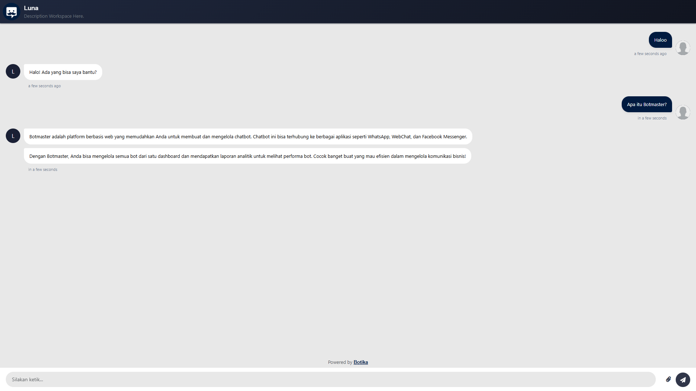 |
0.689 | FAILED | 00:00:14 |
| Apa kelebihan botmaster? | Apa kelebihan botmaster? | Botmaster punya banyak kelebihan, antara lain: 1. Mudah dipakai bahkan oleh pemula, 2. Bisa dihubungkan ke banyak channel komunikasi, 3. Ada dashboard terpusat untuk melihat semua bot, 4. Menyediakan laporan analitik (statistik chat, jumlah pengguna, perdataa bot), dan 5. Mendukung kerja tim karena akses bisa dibagi. 6. Dilengkapi chat console yang mempermudah monitoring interaksi pengguna dengan bot secara langsung. | Botmaster punya banyak kelebihan, nih! Mulai dari mudah dipakai bahkan buat pemula, bisa dihubungkan ke banyak channel komunikasi, dan punya dashboard terpusat buat ngelihat semua bot. Selain itu, ada laporan analitik yang detail, mendukung kerja tim karena akses bisa dibagi, dan dilengkapi chat console buat monitoring interaksi pengguna dengan bot secara langsung. Cocok banget buat bisnis yang pengen efisien dan terorganisir! | Auto: ✓ Jawaban sudah cukup lengkap mencakup poin-poin utama. Bisa ditambahkan detail tentang antara, oleh untuk lebih komprehensif. |
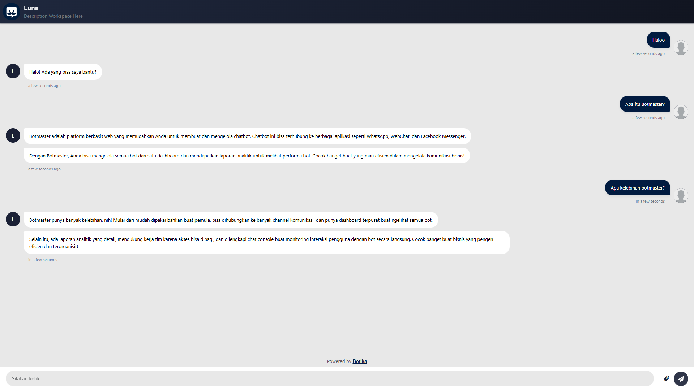 |
0.826 | PASS | 00:00:37 |
| Bagaimana mengakses Website Botmaster? | Bagaimana mengakses Website Botmaster? | Anda dapat mengakses Botmaster dengan membuka alamat https://botmaster.botika.online/ lewat browser di komputer atau HP. Dari situs ini, Anda bisa daftar akun baru, login, dan mulai mengelola bot. | Gampang banget! Anda bisa akses Botmaster dengan buka alamat botmaster.botika.online lewat browser di komputer atau HP. Dari situ, Anda bisa daftar akun baru, login, dan mulai mengelola bot. | Auto: ✓ Jawaban sudah sangat baik dan lengkap. Semua informasi penting yang diharapkan sudah tercakup dengan akurat. |
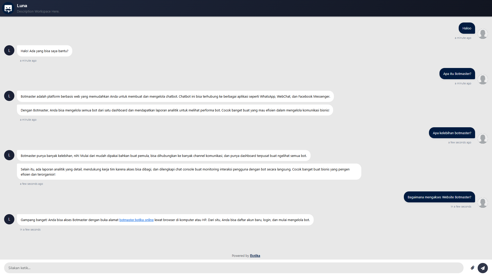 |
0.92 | PASS | 00:00:12 |
| Apa saja fitur utama botmaster? | Apa saja fitur utama botmaster? | Botmaster memiliki 10 fitur utama, yaitu: 1. Membuat Bot Baru Membuat dan mengelola bot sesuai kebutuhan bisnis atau layanan Anda, 2.Channel Integrasi Menghubungkan bot ke berbagai channel komunikasi seperti WhatsApp, WebChat, dan lainnya. Botmaster mendukung banyak channel sekaligus, sehingga satu bot bisa berjalan di beberapa platform sekaligus, 3. Rules Mengatur jawaban otomatis bot. Rules di Botmaster diintegrasikan dengan platform.botika.online, sehingga interaksi bot dapat berjalan secara dinamis dan sesuai alur percakapan yang diatur, 4.Access Memberikan akses ke anggota tim lain. Anda dapat menambahkan email anggota agar mereka juga bisa mengakses Botmaster menggunakan akun masing-masing, dengan peran atau izin yang ditentukan, 5. Resource Menyimpan berbagai jenis konten yang digunakan oleh bot, termasuk teks, audio, video, gambar, dan dokumen, 6. Catalog Mengatur produk dan kategori, memudahkan bot untuk menampilkan informasi produk secara terstruktur, 7. Chat Console Memantau aktivitas pengguna secara real-time. Melalui menu ini, owner bot atau akun yang diberikan akses dapat melihat percakapan. Fitur membalas chat tersedia, tetapi tidak disarankan; jika ingin membalas chat, sebaiknya menggunakan omni.botika.online, 8. Logs Menyimpan catatan aktivitas yang dilakukan oleh rule melalui fungsi writelog, berguna untuk debugging dan analisis jalannya percakapan, 9. Banned Menampilkan daftar pengguna yang diblokir oleh bot, 10. Analytics Menu Analytics digunakan untuk memantau dan mengakses data aktivitas bot secara keseluruhan. Fitur utamanya meliputi: Message Activity → jumlah pesan masuk, keluar, dan total percakapan. User Activity → statistik pengguna, termasuk pengguna baru, pengguna kembali, dan pengguna unik. Conversation Activity → ringkasan percakapan, rata-rata sesi per pengguna, dan durasi percakapan. Broadcast → laporan pesan yang dikirim ke banyak pengguna, termasuk jumlah terkirim, dibaca, dan dibalas. Report → ringkasan aktivitas percakapan berdasarkan kategori/group yang ditentukan di rule. Audience Engagement → grafik interaksi pengguna dengan chatbot. Conversation Detail → detail percakapan, termasuk pesan masuk/keluar dan durasi sesi. Main Menu → statistik akses ke menu utama bot. Unknown → laporan pertanyaan yang tidak dikenali bot. Not Handled → jumlah percakapan yang tidak berhasil ditangani bot/agen. Fitur umum: data dapat diunduh dan difilter berdasarkan periode tertentu. | Botmaster punya 10 fitur utama nih, yaitu: 1. Membuat Bot Baru: Buat dan kelola bot sesuai kebutuhan bisnis. 2. Channel Integrasi: Hubungkan bot ke berbagai channel komunikasi. 3. Rules: Atur jawaban otomatis bot. 4. Access: Berikan akses ke anggota tim lain. 5. Resource: Simpan berbagai jenis konten untuk bot. 6. Catalog: Atur produk dan kategori. 7. Chat Console: Pantau aktivitas pengguna secara real-time. 8. Logs: Simpan catatan aktivitas melalui writelog. 9. Banned: Lihat daftar pengguna yang diblokir. 10. Analytics: Pantau dan akses data aktivitas bot secara keseluruhan. Fitur-fitur ini bikin pengelolaan bot jadi lebih mudah dan efisien! | Auto: ⚠ Jawaban hanya mencakup sebagian kecil informasi (botmaster dan fitur). Banyak informasi penting yang belum disebutkan seperti memiliki, mengelola, atau. |
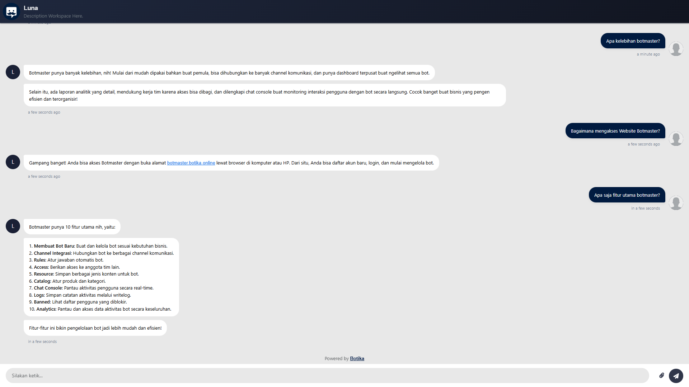 |
0.421 | FAILED | 00:00:37 |
| Bagaimana Registrasi Akun Baru di Botmaster? | Bagaimana Registrasi Akun Baru di Botmaster? | Untuk menggunakan Botmaster, Anda perlu membuat akun lebih dulu. Caranya: 1. Buka website Botmaster, 2. Klik tombol Register atau Sign Up, 3. Isi data diri dan klik Next. Jika email valid, akun akan langsung siap dipakai. | Untuk daftar akun baru di Botmaster, ikuti langkah-langkah berikut: 1. Buka website Botmaster. 2. Klik tombol "Register" atau "Sign Up". 3. Isi data diri Anda dan klik "Next". Kalau email Anda valid, akun bakal langsung siap dipakai. Gampang, kan? | Auto: ✓ Jawaban sudah cukup lengkap mencakup poin-poin utama. Bisa ditambahkan detail tentang perlu, membuat untuk lebih komprehensif. |
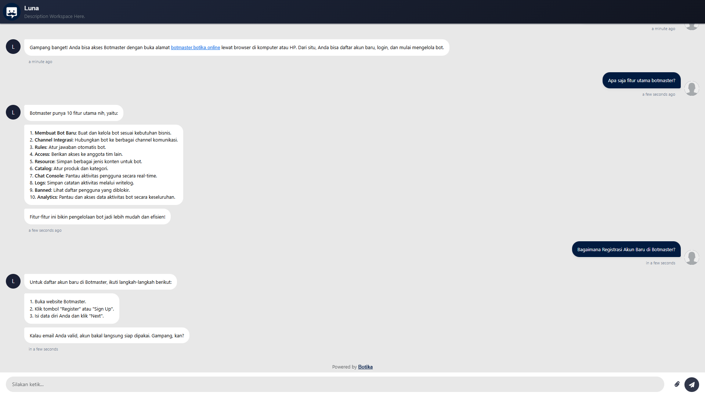 |
0.8 | PASS | 00:00:37 |
| Apa saja data yang Dibutuhkan Registrasi di Botmaster? | Apa saja data yang Dibutuhkan Registrasi di Botmaster? | Saat mendaftar, data yang perlu diisi adalah: Nama lengkap, Email aktif (jangan pakai email palsu agar bisa menerima verifikasi), Nomor Telepon (isi dengan nomor yang aktif untuk keperluan verifikasi atau pemulihan akun) dan Password (buat password kuat, minimal 8 karakter dengan kombinasi huruf & angka). | Untuk registrasi di Botmaster, data yang perlu Anda isi adalah: - Nama lengkap - Email aktif (jangan pakai email palsu agar bisa menerima verifikasi) - Nomor Telepon (isi dengan nomor yang aktif untuk keperluan verifikasi atau pemulihan akun) - Password (buat password kuat, minimal 8 karakter dengan kombinasi huruf & angka) | Auto: ✓ Jawaban sudah sangat baik dan lengkap. Semua informasi penting yang diharapkan sudah tercakup dengan akurat. |
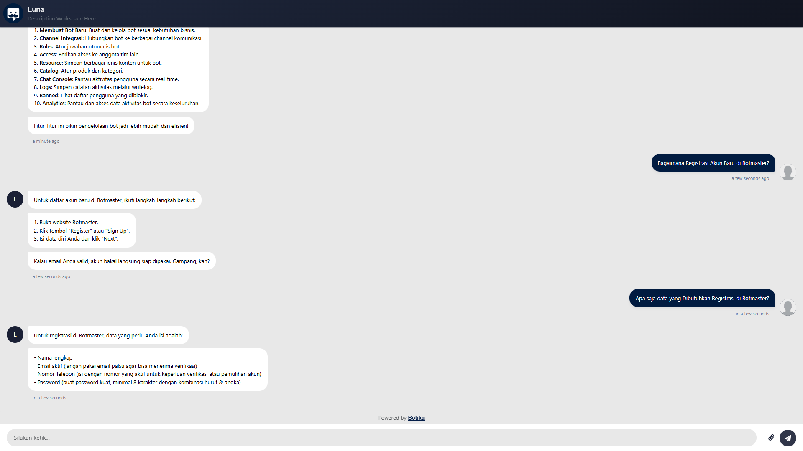 |
0.951 | PASS | 00:00:15 |
| Bagaimana Login ke Akun Botmaster? | Bagaimana Login ke Akun Botmaster? | Jika sudah punya akun, caranya login adalah: 1. Buka website Botmaster, 2. Klik tombol Login, 3. Masukkan email dan password lalu klik Next. Jika data benar, Anda akan masuk ke dashboard. | 1. Buka website Botmaster. 2. Klik tombol "Login". 3. Masukkan email dan password, lalu klik "Next". Kalau data benar, Anda bakal langsung masuk ke dashboard! | Auto: ⚠ Jawaban sudah benar untuk bagian login dan buka, tapi masih kurang lengkap. Perlu ditambahkan informasi tentang jika, sudah, punya. |
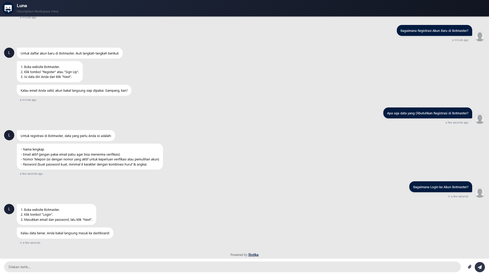 |
0.692 | FAILED | 00:00:37 |
| Apa itu Akun Botika Bisa Dipakai di Botmaster? | Apa itu Akun Botika Bisa Dipakai di Botmaster? | Jika sebelumnya Anda sudah pernah membuat akun di produk Botika lain, akun itu bisa dipakai langsung untuk login ke Botmaster tanpa perlu daftar lagi. Cukup login dengan email & password yang sama. | Kalau Anda sudah punya akun di produk Botika lain, Anda bisa langsung pakai akun itu buat login ke Botmaster. Tinggal masuk dengan email & password yang sama, nggak perlu daftar lagi. | Auto: ✓ Jawaban sudah cukup lengkap mencakup poin-poin utama. Bisa ditambahkan detail tentang jika, sebelumnya untuk lebih komprehensif. |
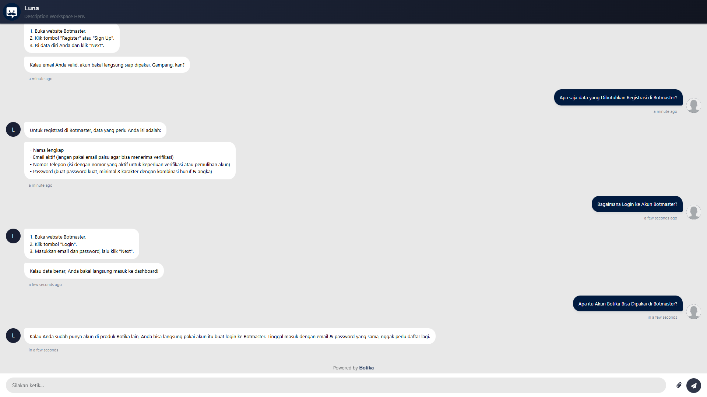 |
0.786 | PASS | 00:00:15 |
| Bagaimana jika Lupa Password di Botmaster? | Bagaimana jika Lupa Password di Botmaster? | Jika Anda lupa password akun Botmaster, jangan khawatir. Di halaman login, klik opsi “Lupa password?”. Setelah itu, masukkan email yang terdaftar. Sistem akan mengirim instruksi reset password ke email Anda. | Jangan khawatir! Di halaman login Botmaster, klik opsi “Lupa password?”. Masukkan email yang terdaftar, dan sistem akan mengirim instruksi reset password ke email Anda. | Auto: ✓ Jawaban sudah cukup lengkap mencakup poin-poin utama. Bisa ditambahkan detail tentang jika, akun untuk lebih komprehensif. |
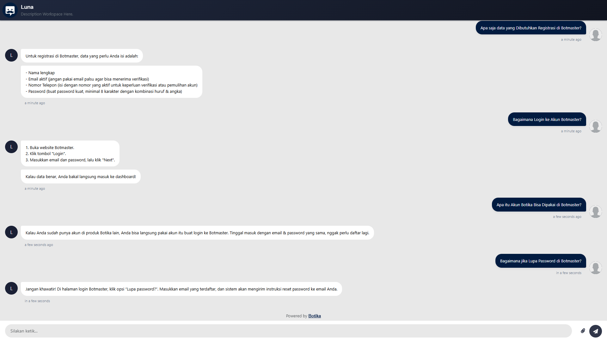 |
0.889 | PASS | 00:00:10 |
| Bagaimana Reset Password dengan Email di Botmaster? | Bagaimana Reset Password dengan Email di Botmaster? | Proses reset password sama seperti langkah saat lupa password. Anda cukup membuka halaman login Botmaster, klik “Lupa password?”, masukkan email terdaftar, lalu ikuti instruksi yang dikirim melalui email untuk membuat password baru. | Proses reset password di Botmaster sama kayak langkah saat lupa password. Cukup buka halaman login Botmaster, klik “Lupa password?”, masukkan email terdaftar, dan ikuti instruksi yang dikirim lewat email untuk bikin password baru. | Auto: ✓ Jawaban sudah cukup lengkap mencakup poin-poin utama. Bisa ditambahkan detail tentang seperti, anda untuk lebih komprehensif. |
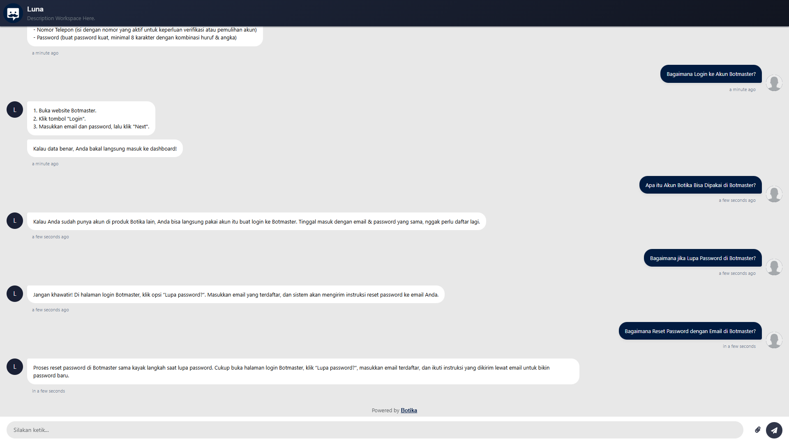 |
0.844 | PASS | 00:00:14 |
| Apa itu Verifikasi OTP di Botmaster? | Apa itu Verifikasi OTP di Botmaster? | Buka email, salin kode OTP, lalu masukkan ke kolom verifikasi di halaman reset password. Jika OTP benar, sistem akan melanjutkan ke tahap pembuatan password baru. | Verifikasi OTP di Botmaster itu proses di mana Anda buka email, salin kode OTP, lalu masukkan ke kolom verifikasi di halaman reset password. Kalau OTP-nya benar, sistem bakal lanjut ke tahap pembuatan password baru. | Auto: ✓ Jawaban sudah sangat baik dan lengkap. Semua informasi penting yang diharapkan sudah tercakup dengan akurat. |
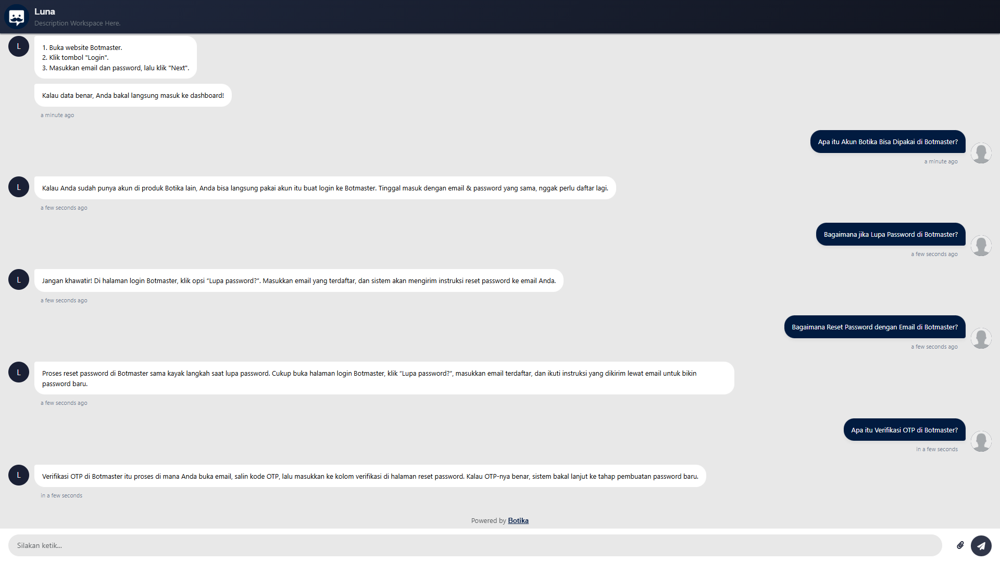 |
0.9 | PASS | 00:00:13 |
| Bagaimana Membuat Password Baru di Botmaster? | Bagaimana Membuat Password Baru di Botmaster? | Setelah verifikasi berhasil, buat password baru. Tips: gunakan kombinasi huruf besar, huruf kecil, angka, dan simbol agar aman. Contoh: Botika@2025. Jangan pakai password lama supaya lebih aman. | Setelah verifikasi berhasil, Anda bisa bikin password baru. Tipsnya, gunakan kombinasi huruf besar, huruf kecil, angka, dan simbol biar aman. Contoh: Botika@2025. Jangan pakai password lama supaya lebih aman, ya! | Auto: ✓ Jawaban sudah sangat baik dan lengkap. Semua informasi penting yang diharapkan sudah tercakup dengan akurat. |
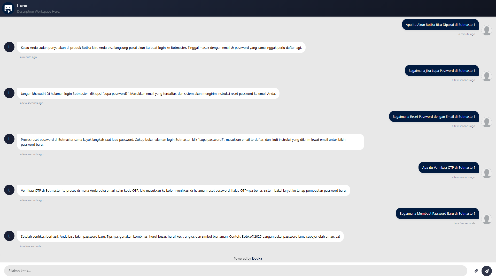 |
0.926 | PASS | 00:00:14 |
| Bagaimana Login dengan Password Baru di Botmaster? | Bagaimana Login dengan Password Baru di Botmaster? | Setelah password berhasil diganti, kembali ke halaman login. Masukkan email Anda dan password baru. Jika berhasil, Anda akan masuk ke dashboard seperti biasa. | Setelah password berhasil diganti, balik lagi ke halaman login. Masukkan email dan password baru Anda. Kalau berhasil, Anda akan masuk ke dashboard seperti biasa. | Auto: ✓ Jawaban sudah sangat baik dan lengkap. Semua informasi penting yang diharapkan sudah tercakup dengan akurat. |
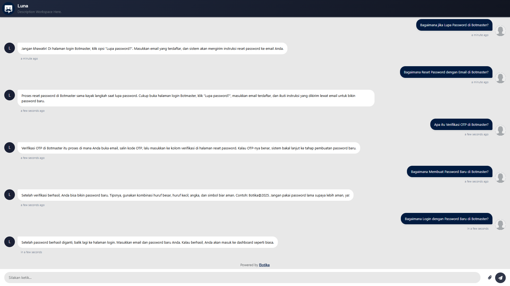 |
0.95 | PASS | 00:00:13 |
| Bagaimana Membuat Bot Baru di Botmaster? | Bagaimana Membuat Bot Baru di Botmaster? | Untuk menambah bot: 1. Klik Create Bot di dashboard, 2. Isi nama, status, dan deskripsi singkat, 3. Klik Create. Bot baru akan langsung muncul di daftar. | Untuk menambah bot baru di Botmaster, Anda bisa ikuti langkah-langkah ini: 1. Klik "Create Bot" di dashboard. 2. Isi nama, status, dan deskripsi singkat. 3. Klik "Create." Bot baru Anda akan langsung muncul di daftar. Seru, kan? | Auto: ✓ Jawaban sudah sangat baik dan lengkap. Semua informasi penting yang diharapkan sudah tercakup dengan akurat. |
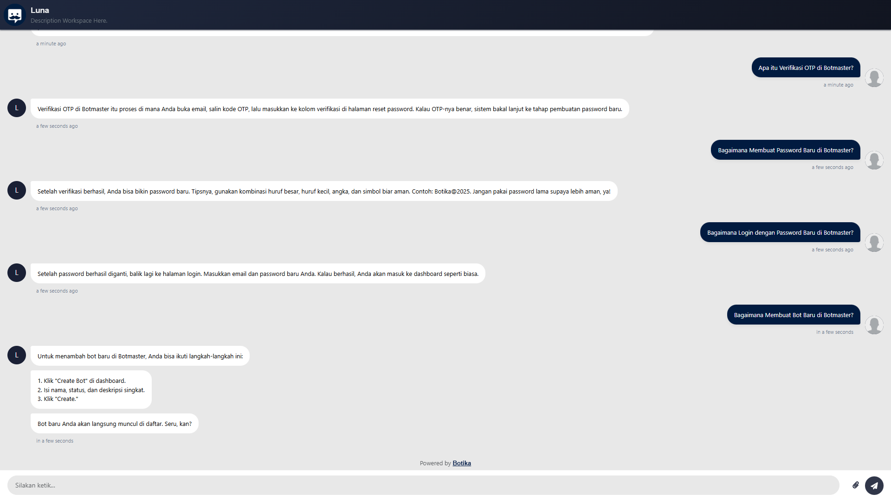 |
1 | PASS | 00:00:37 |
| Bagaimana mengisi nama Bot di Botmaster? | Bagaimana mengisi nama Bot di Botmaster? | Nama bot sebaiknya jelas dan mudah diingat. Misalnya: “Bot Penjualan Toko A” agar tim tahu fungsi bot tersebut. Hindari nama terlalu umum seperti “Bot Baru” yang membingungkan. | Saat mengisi nama bot di Botmaster, pastikan namanya jelas dan gampang diingat. Contohnya, "Bot Penjualan Toko A" supaya tim tahu fungsi botnya. Hindari nama umum kayak "Bot Baru" yang bisa bikin bingung. | Auto: ✓ Jawaban sudah sangat baik dan lengkap. Semua informasi penting yang diharapkan sudah tercakup dengan akurat. |
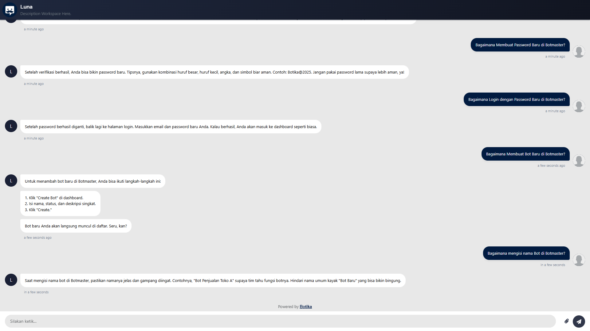 |
0.9 | PASS | 00:00:13 |
| Apa itu Status Bot di Botmaster? | Apa itu Status Bot di Botmaster? | Status Active artinya bot langsung siap melayani chat pengguna. Status Inactive artinya bot tidak akan menjawab, cocok digunakan saat masih proses pengaturan. | Status bot di Botmaster menunjukkan apakah bot itu aktif atau tidak. Kalau statusnya "Active", berarti bot siap digunakan dan bisa berinteraksi. Kalau "Inactive", botnya enggak akan berfungsi sampai statusnya diubah jadi "Active" lagi. Ini berguna buat maintenance atau kalau botnya belum siap dipakai. | Auto: ⚠ Jawaban hanya mencakup sebagian kecil informasi (status dan active). Banyak informasi penting yang belum disebutkan seperti artinya, langsung, melayani. |
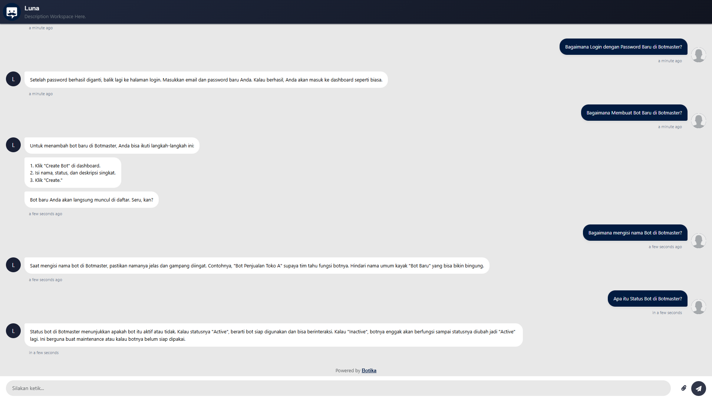 |
0.4 | FAILED | 00:00:14 |
| Apa itu Deskripsi Bot di Botmaster? | Apa itu Deskripsi Bot di Botmaster? | Deskripsi adalah catatan singkat tentang fungsi bot. Misalnya: “Bot ini untuk menjawab pertanyaan harga produk dan status pesanan.” Deskripsi membantu tim membedakan fungsi antar bot. | Deskripsi bot di Botmaster adalah catatan singkat tentang fungsi bot. Misalnya, "Bot ini untuk menjawab pertanyaan harga produk dan status pesanan." Deskripsi ini membantu tim untuk membedakan fungsi dari berbagai bot yang ada. | Auto: ✓ Jawaban sudah sangat baik dan lengkap. Semua informasi penting yang diharapkan sudah tercakup dengan akurat. |
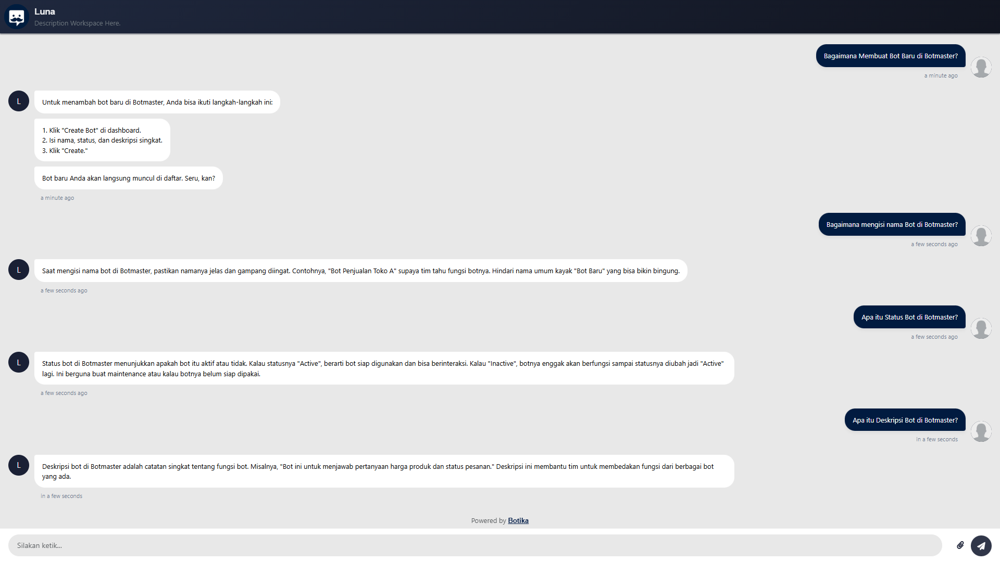 |
0.947 | PASS | 00:00:14 |
| Apa itu Simpan Bot Baru di Botmaster? | Apa itu Simpan Bot Baru di Botmaster? | Setelah semua kolom terisi, tekan tombol Create. Sistem akan menampilkan notifikasi bahwa bot berhasil dibuat. Jika belum berhasil, periksa apakah nama sudah dipakai atau ada kolom kosong. | Setelah semua kolom terisi saat membuat bot baru di Botmaster, Anda perlu menekan tombol "Create". Sistem kemudian akan menampilkan notifikasi bahwa bot berhasil dibuat. Kalau belum berhasil, pastikan nama belum dipakai atau tidak ada kolom yang kosong. | Auto: ✓ Jawaban sudah cukup lengkap mencakup poin-poin utama. Bisa ditambahkan detail tentang tekan, jika untuk lebih komprehensif. |
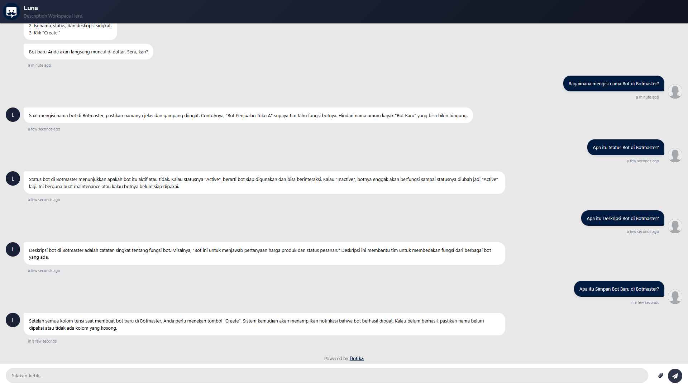 |
0.8 | PASS | 00:00:13 |
| Bagaimana Edit Bot yang Sudah Ada di Botmaster? | Bagaimana Edit Bot yang Sudah Ada di Botmaster? | Jika ingin mengubah bot: 1. Pergi ke menu Home lalu pilih bot dan klik ikon titik tiga, kemudian pilih Edit, 2. Ubah nama, status, atau deskripsi sesuai kebutuhan, 3. Klik Update untuk menyimpan. | Untuk mengedit bot yang sudah ada di Botmaster: 1. Pergi ke menu Home, lalu pilih bot yang ingin diubah dan klik ikon titik tiga, kemudian pilih Edit. 2. Ubah nama, status, atau deskripsi sesuai kebutuhan. 3. Klik Update untuk menyimpan perubahan. Pastikan menunggu notifikasi “Update Successful” untuk memastikan perubahan tersimpan, ya! | Auto: ✓ Jawaban sudah sangat baik dan lengkap. Semua informasi penting yang diharapkan sudah tercakup dengan akurat. |
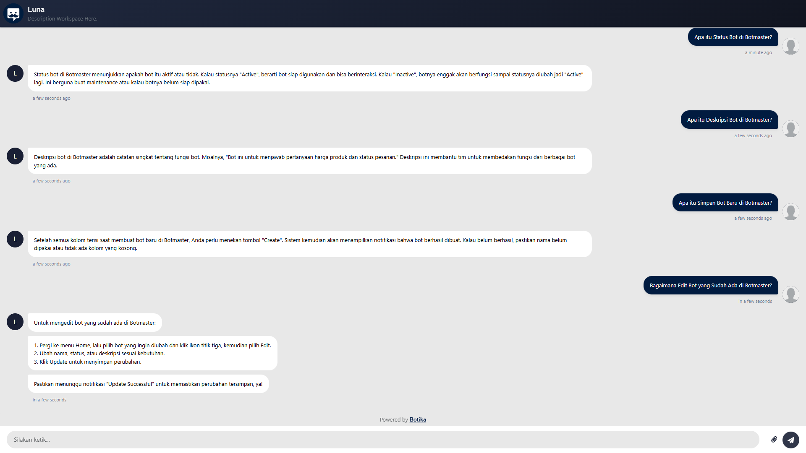 |
0.962 | PASS | 00:00:16 |
| Apa itu Mengganti Nama Bot di Botmaster? | Apa itu Mengganti Nama Bot di Botmaster? | Saat edit bot, Anda bisa mengganti nama bot agar lebih sesuai. Perubahan nama tidak menghapus percakapan atau data lama. Gunakan nama baru yang tetap mudah dikenali oleh tim. | Mengganti nama bot di Botmaster memungkinkan Anda menyesuaikan nama bot agar lebih sesuai dengan kebutuhan. Perubahan nama ini tidak akan menghapus percakapan atau data lama, jadi aman untuk dilakukan. Pastikan nama baru tetap mudah dikenali oleh tim Anda! | Auto: ✓ Jawaban sudah cukup lengkap mencakup poin-poin utama. Bisa ditambahkan detail tentang saat, bisa untuk lebih komprehensif. |
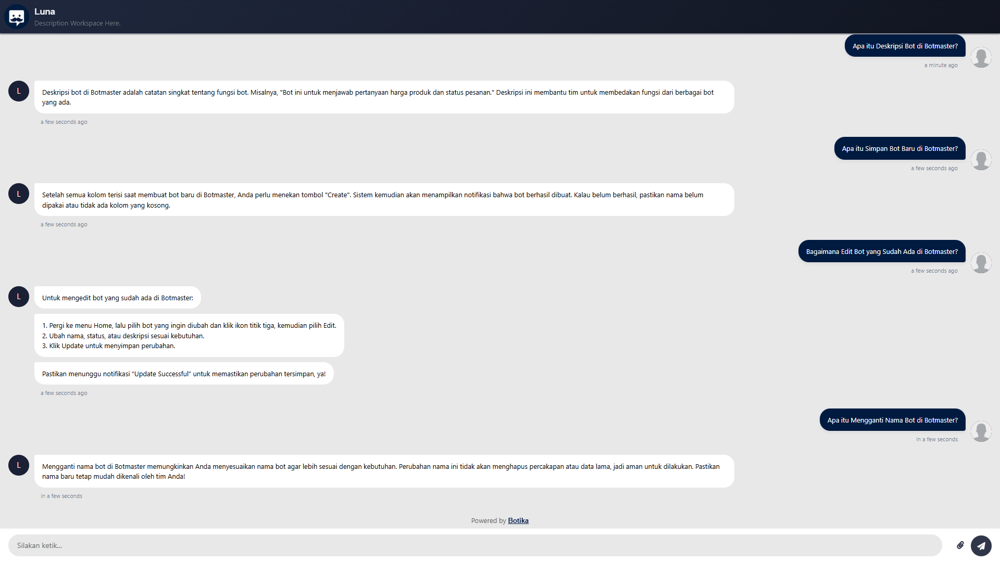 |
0.88 | PASS | 00:00:16 |
| Apa itu Mengubah Status Bot di Botmaster? | Apa itu Mengubah Status Bot di Botmaster? | Saat edit bot, Anda bisa mengubah status dari Active lalu Inactive atau sebaliknya. Gunakan Inactive jika bot belum siap dipakai atau sedang maintenance. Perubahan status langsung berlaku begitu Anda klik Update. | Mengubah status bot di Botmaster berarti Anda bisa mengatur status bot dari Active menjadi Inactive atau sebaliknya. Ini berguna jika bot belum siap dipakai atau sedang dalam masa maintenance. Perubahan status ini langsung berlaku begitu Anda klik Update. | Auto: ✓ Jawaban sudah cukup lengkap mencakup poin-poin utama. Bisa ditambahkan detail tentang saat, lalu untuk lebih komprehensif. |
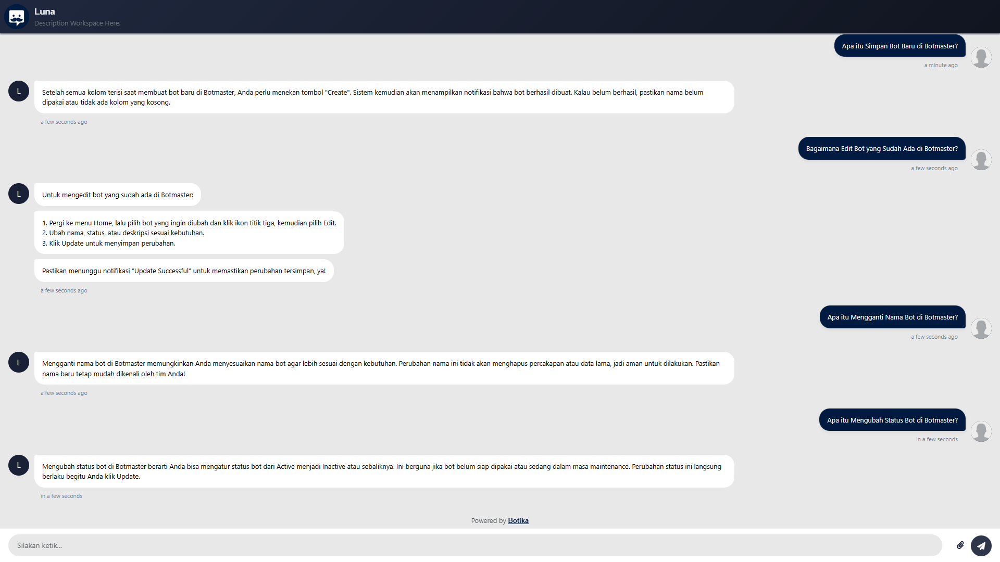 |
0.897 | PASS | 00:00:12 |
| Apa itu Mengubah Deskripsi Bot di Botmaster? | Apa itu Mengubah Deskripsi Bot di Botmaster? | Jika fungsi bot berubah (misalnya awalnya hanya menjawab pertanyaan produk, lalu ditambah fitur cek pesanan), deskripsinya bisa diedit supaya anggota tim tahu peran bot terbaru. | Mengubah deskripsi bot di Botmaster berguna jika fungsi bot berubah, misalnya dari hanya menjawab pertanyaan produk menjadi juga cek pesanan. Dengan mengedit deskripsi, anggota tim bisa tahu peran terbaru dari bot tersebut. | Auto: ✓ Jawaban sudah cukup lengkap mencakup poin-poin utama. Bisa ditambahkan detail tentang awalnya, lalu untuk lebih komprehensif. |
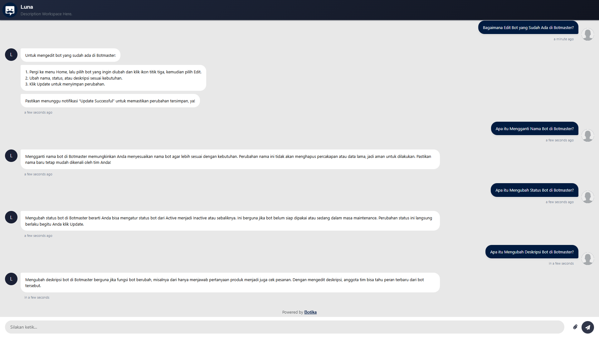 |
0.81 | PASS | 00:00:13 |
| Apa itu Menyimpan Perubahan Bot di Botmaster? | Apa itu Menyimpan Perubahan Bot di Botmaster? | Setelah mengedit, jangan lupa klik Update. Jika tidak, semua perubahan (nama, status, deskripsi) tidak akan tersimpan. Selalu tunggu notifikasi “Update Successful”. | Setelah Anda melakukan pengeditan di Botmaster, jangan lupa untuk klik Update. Kalau tidak, semua perubahan seperti nama, status, dan deskripsi tidak akan tersimpan. Pastikan Anda menunggu notifikasi “Update Successful” untuk memastikan perubahan telah disimpan dengan sukses! | Auto: ✓ Jawaban sudah cukup lengkap mencakup poin-poin utama. Bisa ditambahkan detail tentang jika, selalu untuk lebih komprehensif. |
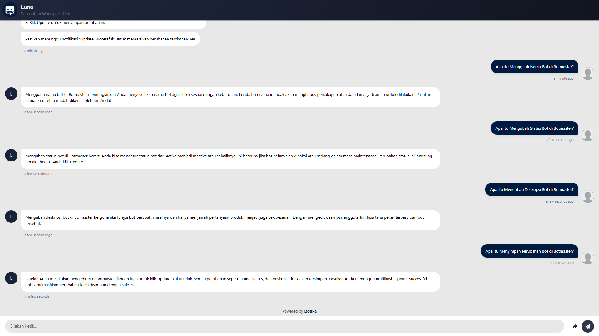 |
0.857 | PASS | 00:00:14 |
| Bagaimana cara channel integrasi di Botmaster? | Bagaimana cara channel integrasi di Botmaster? | Channel Integrasi adalah fitur untuk menghubungkan bot dengan aplikasi komunikasi lain Contohnya: WhatsApp, WebChat (chat di website), atau Facebook Messenger Dengan integrasi, bot bisa melayani pengguna dari berbagai tempat dalam satu dashboard. | Channel Integrasi di Botmaster adalah fitur yang memungkinkan bot terhubung dengan aplikasi komunikasi lain seperti WhatsApp, WebChat, atau Facebook Messenger. Dengan integrasi ini, bot bisa melayani pengguna dari berbagai platform dalam satu dashboard. Untuk langkah-langkah lebih lanjut, Anda bisa cek dokumen berikut: drive.google.com/file/d/1YpQq7dnjgeIhCX60DkJ9SENvQmGMADYa/view?usp=sharing. | Auto: ✓ Jawaban sudah cukup lengkap mencakup poin-poin utama. Bisa ditambahkan detail tentang menghubungkan, contohnya untuk lebih komprehensif. |
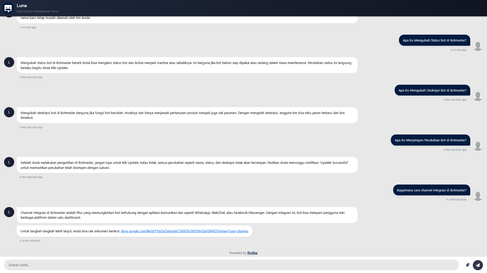 |
0.862 | PASS | 00:00:14 |
| Bagaimana cara mengintegrasikan webchat di Botmaster? | Bagaimana cara mengintegrasikan webchat di Botmaster? | Contoh integrasi: 1. Masuk ke menu Integration lalu pilih WebChat dan klik Add WebChat, 2. Isi data integrasi (nama, deskripsi, tema, dan lain-lain), 3. Klik Save. Setelah itu salin script untuk dipasang di website atau salin link untuk membagikan tautan chat secara langsung. | Untuk mengintegrasikan webchat di Botmaster, Anda bisa ikuti langkah-langkah berikut: 1. Masuk ke menu Integration, lalu pilih WebChat dan klik Add WebChat. 2. Isi data integrasi seperti nama, deskripsi, tema, dan lainnya. 3. Klik Save. Setelah itu, salin script untuk dipasang di website atau salin link untuk membagikan tautan chat secara langsung. Mudah, kan? | Auto: ✓ Jawaban sudah sangat baik dan lengkap. Semua informasi penting yang diharapkan sudah tercakup dengan akurat. |
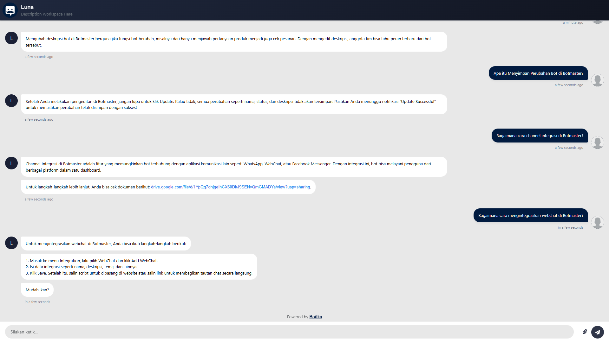 |
0.971 | PASS | 00:00:37 |
| Bagaimana cara nama integrasi webchat di Botmaster? | Bagaimana cara nama integrasi webchat di Botmaster? | Beri nama integrasi yang jelas, misalnya: “WebChat Website Toko A” Tujuannya supaya kalau ada banyak integrasi, tim tahu mana yang untuk website utama, mana untuk microsite. | Beri nama integrasi yang jelas, misalnya: “WebChat Website Toko A”. Tujuannya supaya kalau ada banyak integrasi, tim tahu mana yang untuk website utama dan mana yang untuk microsite. | Auto: ✓ Jawaban sudah sangat baik dan lengkap. Semua informasi penting yang diharapkan sudah tercakup dengan akurat. |
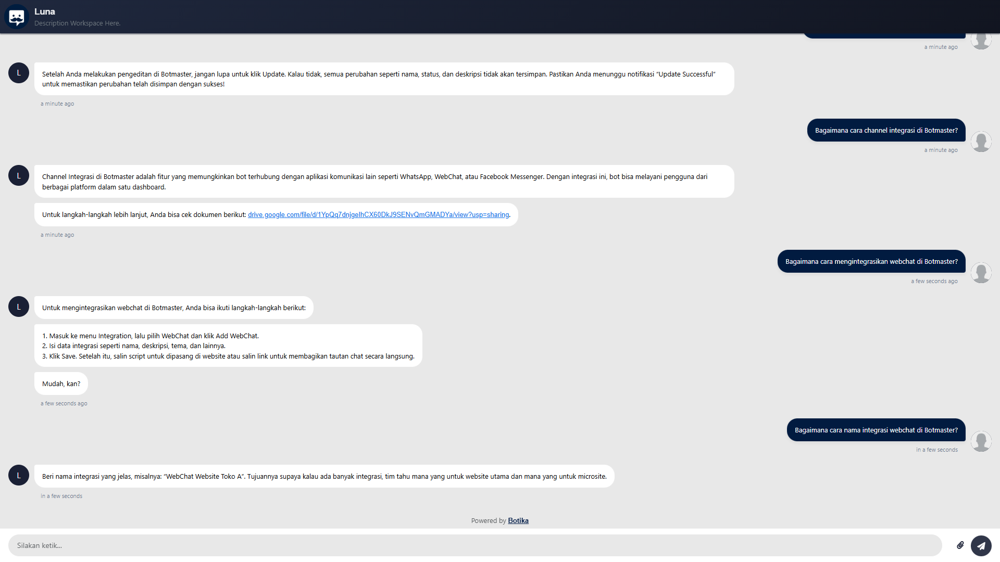 |
1 | PASS | 00:00:13 |
| Apa itu Icon WebChat di Botmaster? | Apa itu Icon WebChat di Botmaster? | Anda bisa pakai icon default atau mengganti dengan gambar milik sendiri (via tautan). Pastikan tautan gambar bisa diakses publik, kalau tidak icon tidak akan tampil. | Anda bisa pakai icon default atau mengganti dengan gambar milik sendiri (via tautan). Pastikan tautan gambar bisa diakses publik, kalau tidak icon tidak akan tampil. | Auto: ✓ Jawaban sudah sangat baik dan lengkap. Semua informasi penting yang diharapkan sudah tercakup dengan akurat. |
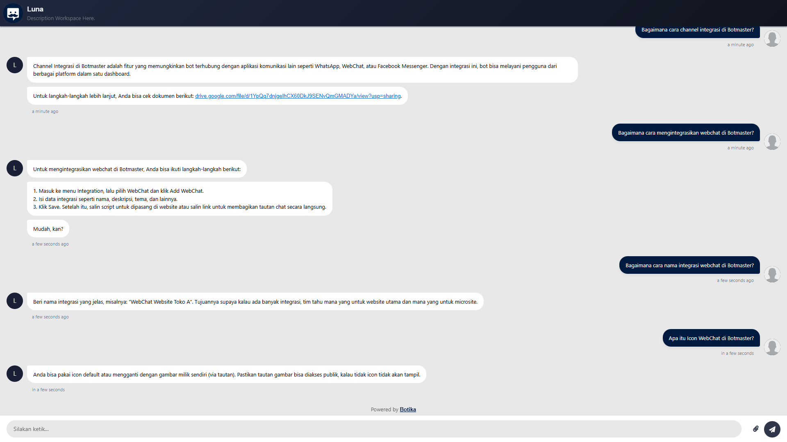 |
1 | PASS | 00:00:12 |
| Apa itu Deskripsi WebChat di Botmaster? | Apa itu Deskripsi WebChat di Botmaster? | Kolom deskripsi dipakai untuk menjelaskan integrasi ini. Misalnya: “Digunakan untuk melayani customer di website utama”. Hal ini memudahkan tim membedakan dengan integrasi lain. | Kolom deskripsi dipakai untuk menjelaskan integrasi ini. Misalnya: “Digunakan untuk melayani customer di website utama”. Hal ini memudahkan tim membedakan dengan integrasi lain. | Auto: ✓ Jawaban sudah sangat baik dan lengkap. Semua informasi penting yang diharapkan sudah tercakup dengan akurat. |
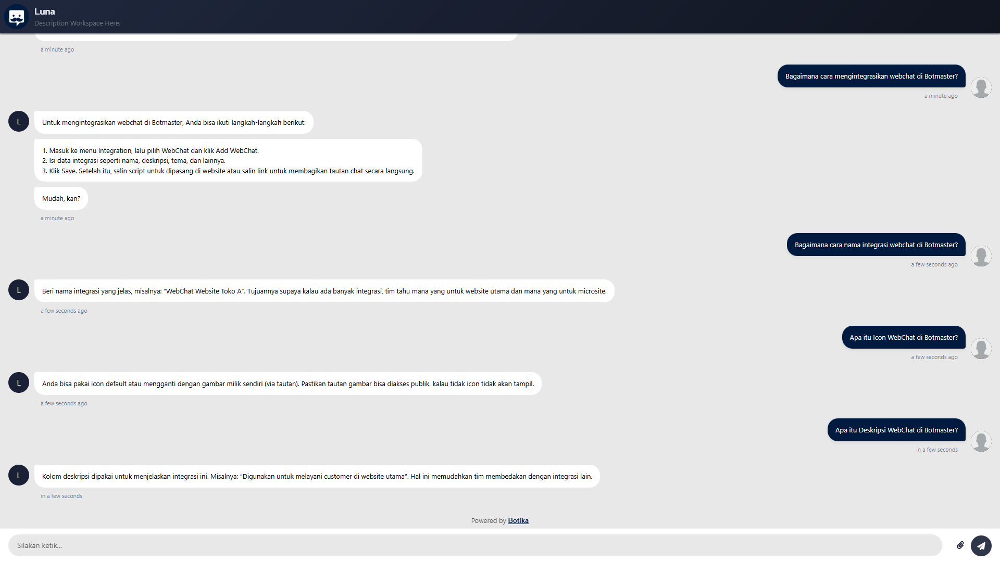 |
1 | PASS | 00:00:13 |
| Apa itu Tema WebChat di Botmaster? | Apa itu Tema WebChat di Botmaster? | Ada dua pilihan: Default atau Custom. Jika Custom, Anda bisa masukkan kode warna (contoh: #011b40). Gunakan warna yang sesuai identitas brand agar tampilan webchat selaras dengan website Anda. | Ada dua pilihan: Default atau Custom. Jika Custom, Anda bisa masukkan kode warna (contoh: #011b40). Gunakan warna yang sesuai identitas brand agar tampilan webchat selaras dengan website Anda. | Auto: ✓ Jawaban sudah sangat baik dan lengkap. Semua informasi penting yang diharapkan sudah tercakup dengan akurat. |
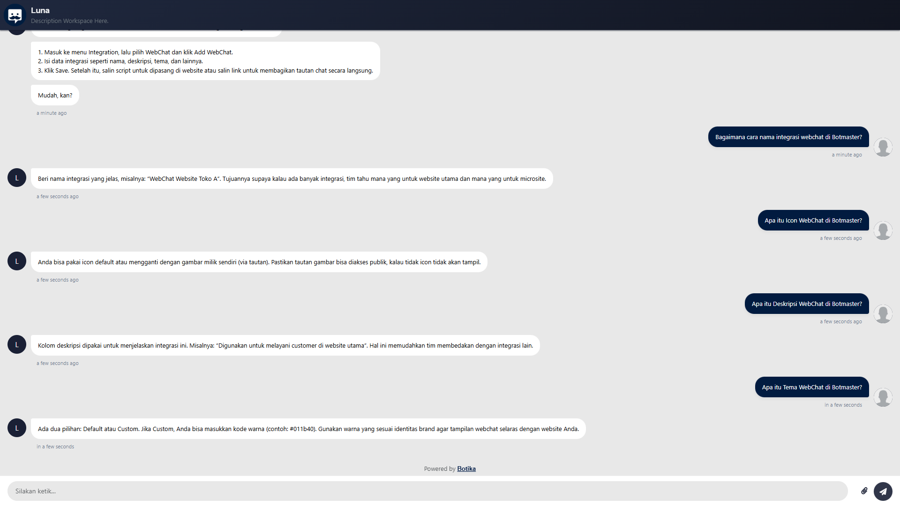 |
1 | PASS | 00:00:12 |
| Apa itu Pre-Chat Form di Botmaster? | Apa itu Pre-Chat Form di Botmaster? | Fitur ini memungkinkan pengunjung mengisi Nama, Email, dan Telepon sebelum memulai chat. Cocok untuk bisnis yang butuh data pengguna untuk follow-up. Namun perlu diingat, langkah tambahan ini bisa membuat sebagian orang enggan chat. | Pre-Chat Form di Botmaster memungkinkan pengunjung mengisi Nama, Email, dan Telepon sebelum memulai chat. Fitur ini cocok untuk bisnis yang butuh data pengguna buat follow-up. Tapi, perlu diingat, langkah tambahan ini bisa bikin sebagian orang jadi enggan untuk chat. | Auto: ✓ Jawaban sudah sangat baik dan lengkap. Semua informasi penting yang diharapkan sudah tercakup dengan akurat. |
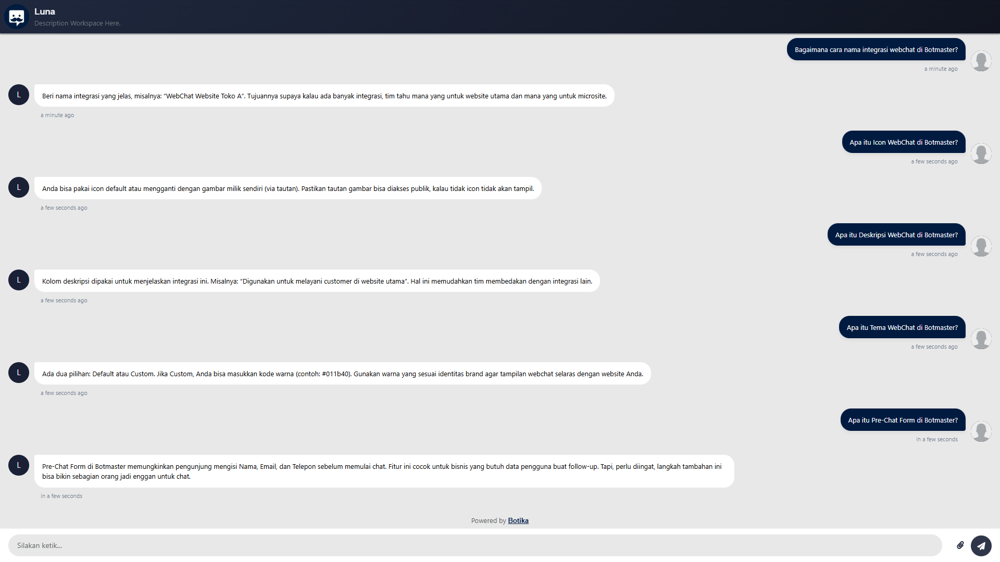 |
0.967 | PASS | 00:00:13 |
| Bagaimana cara menyimpan integrasi webchat di Botmaster? | Bagaimana cara menyimpan integrasi webchat di Botmaster? | Setelah semua data data diisi, tekan tombol Save. Jika muncul pesan kendala, biasanya ada field perlu yang belum diisi (misalnya nama integrasi). | Setelah semua data diisi, tekan tombol Save. Jika muncul pesan kendala, biasanya ada field yang perlu diisi yang belum terisi (misalnya nama integrasi). | Auto: ✓ Jawaban sudah sangat baik dan lengkap. Semua informasi penting yang diharapkan sudah tercakup dengan akurat. |
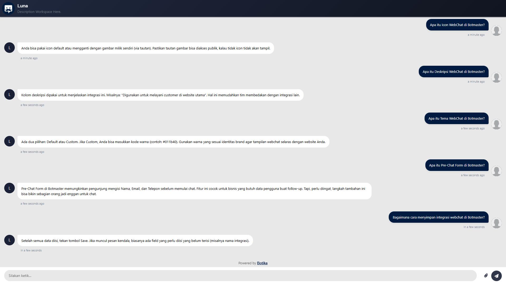 |
1 | PASS | 00:00:13 |
| Apa itu Script Embed WebChat di Botmaster? | Apa itu Script Embed WebChat di Botmaster? | Setelah integrasi tersimpan, klik ikon </> pada daftar WebChat. Salin script yang muncul, lalu tempelkan di HTML website Anda (biasanya sebelum tag </body>). Setelah itu, fitur chat akan langsung tampil di website. | Setelah integrasi tersimpan, Anda bisa klik ikon </> pada daftar WebChat. Salin script yang muncul, lalu tempelkan di HTML website Anda (biasanya sebelum tag </body>). Setelah itu, fitur chat akan langsung tampil di website Anda. | Auto: ✓ Jawaban sudah sangat baik dan lengkap. Semua informasi penting yang diharapkan sudah tercakup dengan akurat. |
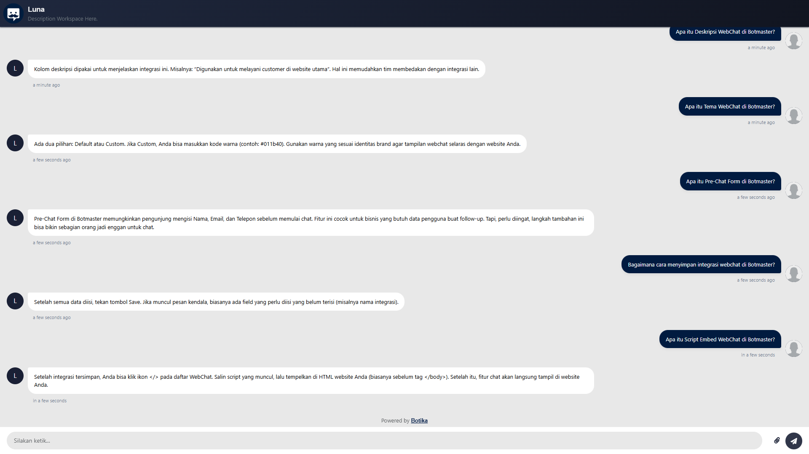 |
1 | PASS | 00:00:13 |
| Apa itu Rules di Botmaster? | Apa itu Rules di Botmaster? | Rules adalah aturan yang mengatur bagaimana chatbot merespons pertanyaan pengguna. Misalnya: jika pengguna tanya “Harga produk A”, maka rule akan mengatur bot untuk menjawab dengan daftar harga. | Rules di Botmaster adalah aturan yang mengatur bagaimana chatbot merespons pertanyaan pengguna. Misalnya, jika pengguna bertanya "Harga produk A", maka rules akan mengatur bot untuk menjawab dengan daftar harga. | Auto: ✓ Jawaban sudah sangat baik dan lengkap. Semua informasi penting yang diharapkan sudah tercakup dengan akurat. |
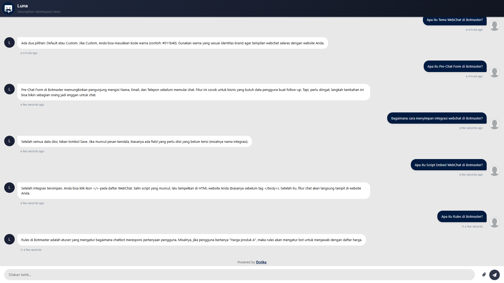 |
1 | PASS | 00:00:12 |
| Apa itu Jenis Rules (Public vs Private) di Botmaster? | Apa itu Jenis Rules (Public vs Private) di Botmaster? | Di Botmaster, terdapat dua jenis rule, yaitu Public dan Private. Rule dengan tipe Public dapat digunakan oleh semua pengguna Botmaster, tetapi tidak dapat diedit oleh pengguna lain. Sementara itu, rule dengan tipe Private hanya dapat digunakan dan diedit oleh akun pembuatnya. Gunakan tipe Public untuk jawaban umum yang bisa dimanfaatkan oleh banyak bot, dan tipe Private untuk informasi atau konfigurasi khusus yang bersifat internal. | Di Botmaster, ada dua jenis rules: Public dan Private. Rules dengan tipe Public bisa digunakan oleh semua pengguna Botmaster, tapi nggak bisa diedit oleh orang lain. Sedangkan, rules dengan tipe Private hanya bisa digunakan dan diedit oleh akun yang membuatnya. Jadi, kalau mau berbagi rules untuk banyak bot, pakai yang Public. Buat info atau konfigurasi khusus, pakai yang Private. | Auto: ✓ Jawaban sudah cukup lengkap mencakup poin-poin utama. Bisa ditambahkan detail tentang terdapat, yaitu untuk lebih komprehensif. |
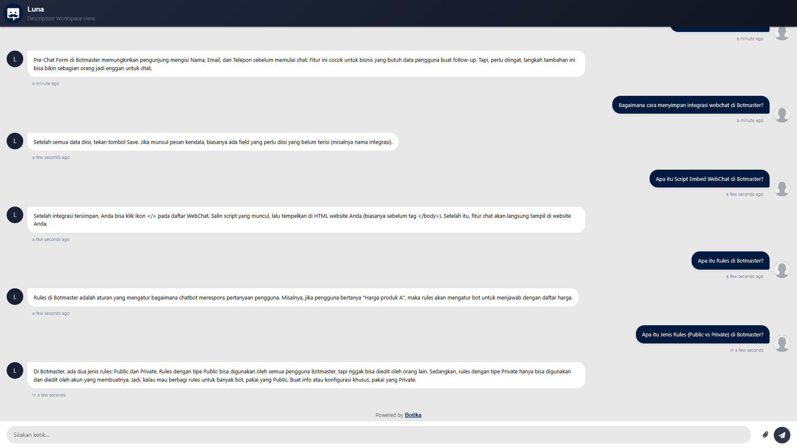 |
0.807 | PASS | 00:00:16 |
| Bagaimana Membuat Rule Baru di Botmaster? | Bagaimana Membuat Rule Baru di Botmaster? | Untuk membuat rule: 1. Buka menu Rules dan klik Create Rule. 2. Anda akan diarahkan ke Platform V2 untuk mengatur alur percakapan sesuai kebutuhan. 3. Setelah selesai, klik Save untuk menyimpan rule. Atau, Anda juga dapat langsung membuka Platform V2 melalui tautan berikut: https://platform.botika.online/ | Untuk membuat rule baru di Botmaster: 1. Buka menu Rules dan klik "Create Rule." 2. Anda akan diarahkan ke Platform V2 untuk mengatur alur percakapan sesuai kebutuhan Anda. 3. Setelah selesai mengatur alur, klik "Save" untuk menyimpan rule tersebut. Anda juga bisa langsung mengakses Platform V2 melalui tautan berikut: platform.botika.online. | Auto: ✓ Jawaban sudah sangat baik dan lengkap. Semua informasi penting yang diharapkan sudah tercakup dengan akurat. |
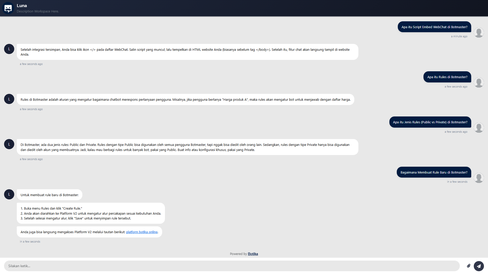 |
0.925 | PASS | 00:00:37 |
| Bagaimana Mengedit Rule di Botmaster? | Bagaimana Mengedit Rule di Botmaster? | Untuk mengubah rule: 1. Masuk ke menu Rules lalu klik Edit, 2. Klik Modify Rule pada rule yang ingin diedit, kemudian Anda akan diarahkan ke platform v2. 3. Lakukan perubahan yang diperlukan, lalu klik Save dan uji coba rule Anda. Atau, Anda juga bisa langsung membuka platform v2 melalui tautan berikut: https://platform.botika.online/ | Untuk mengedit rule di Botmaster: 1. Masuk ke menu Rules lalu klik "Edit." 2. Klik "Modify Rule" pada rule yang ingin diedit, dan Anda akan diarahkan ke platform V2. 3. Lakukan perubahan yang diperlukan, lalu klik "Save" dan uji coba rule Anda. Anda juga bisa langsung membuka platform V2 melalui tautan berikut: platform.botika.online | Auto: ✓ Jawaban sudah sangat baik dan lengkap. Semua informasi penting yang diharapkan sudah tercakup dengan akurat. |
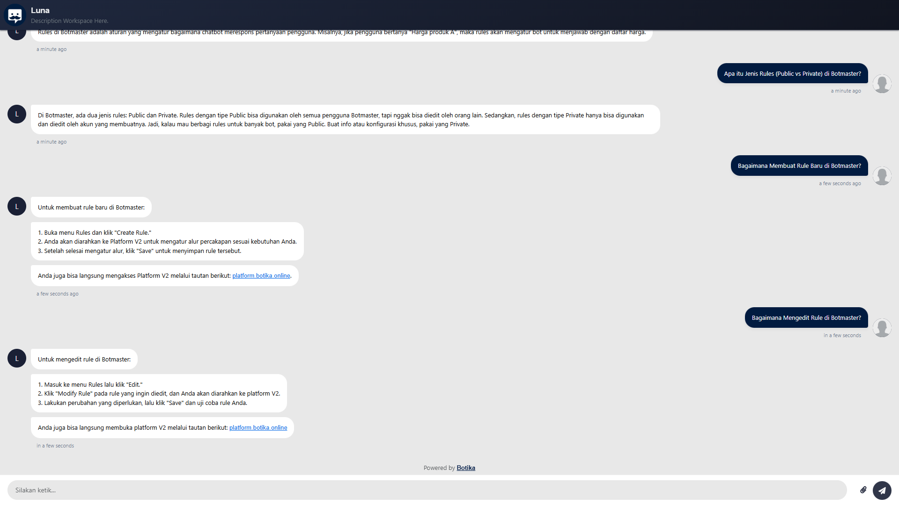 |
0.935 | PASS | 00:00:37 |
| Bagaimana Menambah Rule di Botmaster? | Bagaimana Menambah Rule di Botmaster? | Untuk menambah rule di bot: 1. Masuk ke menu Rules lalu pilih bot dan klik Add Another Rule, 2. Pilih tipe rule (Public atau Private) lalu cari nama rule yang ingin dipakai, 3. Atur prioritas dan klik Save. | 1. Masuk ke menu "Rules" lalu pilih bot dan klik "Add Another Rule." 2. Pilih tipe rule (Public atau Private) lalu cari nama rule yang ingin dipakai. 3. Atur prioritas dan klik "Save." | Auto: ✓ Jawaban sudah sangat baik dan lengkap. Semua informasi penting yang diharapkan sudah tercakup dengan akurat. |
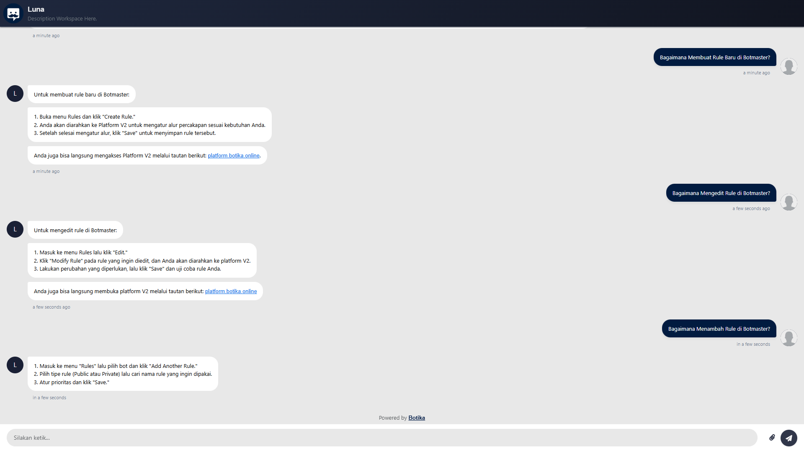 |
0.929 | PASS | 00:00:11 |
| Bagaimana Menghapus Rule di Botmaster? | Bagaimana Menghapus Rule di Botmaster? | Jika rule tidak lagi digunakan, bisa dihapus: 1. Pilih rule, 2. Klik Delete, 3. Klik Save untuk menyimpan perubahan. Catatan: hati-hati, menghapus rule bisa memengaruhi percakapan bot. | 1. Pilih rule yang ingin dihapus. 2. Klik "Delete." 3. Klik "Save" untuk menyimpan perubahan. Catatan: Hati-hati, menghapus rule bisa memengaruhi percakapan bot. | Auto: ✓ Jawaban sudah cukup lengkap mencakup poin-poin utama. Bisa ditambahkan detail tentang jika, tidak untuk lebih komprehensif. |
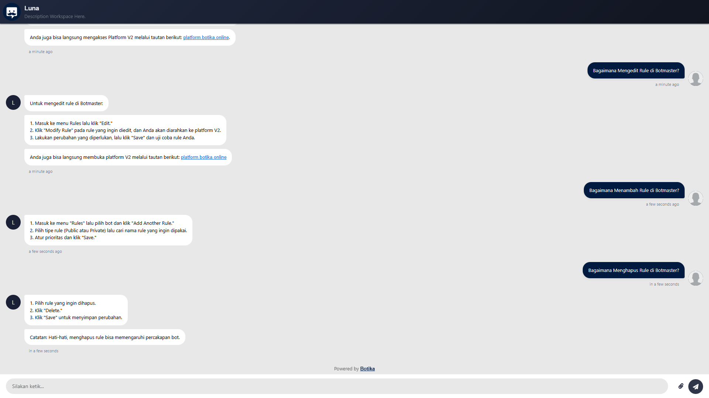 |
0.833 | PASS | 00:00:37 |
| Apa itu Parent Rule di Botmaster? | Apa itu Parent Rule di Botmaster? | Parent Rule adalah rule utama yang selalu dijalankan pertama kali oleh sistem. Jika hanya ada satu rule, sistem akan otomatis menetapkannya sebagai Parent Rule. Namun, jika terdapat beberapa rule, Anda dapat mengatur urutan prioritasnya. Apabila dibutuhkan untuk menjalankan rule lain, Anda dapat menambahkan secondary rule dan menggunakan fitur Jump to Rule atau Jump and Run Rule. Perlu diperhatikan bahwa secondary rule tidak akan dijalankan apabila tidak ada perintah jump dari Parent Rule. | Parent Rule adalah rule utama yang selalu dijalankan pertama kali oleh sistem. Jika hanya ada satu rule, sistem otomatis menetapkannya sebagai Parent Rule. Kalau ada beberapa rule, Anda bisa mengatur urutan prioritasnya. Jika perlu menjalankan rule lain, Anda bisa menambahkan secondary rule dan menggunakan fitur "Jump to Rule" atau "Jump and Run Rule." Secondary rule tidak akan dijalankan kalau tidak ada perintah jump dari Parent Rule. | Auto: ✓ Jawaban sudah cukup lengkap mencakup poin-poin utama. Bisa ditambahkan detail tentang namun, terdapat untuk lebih komprehensif. |
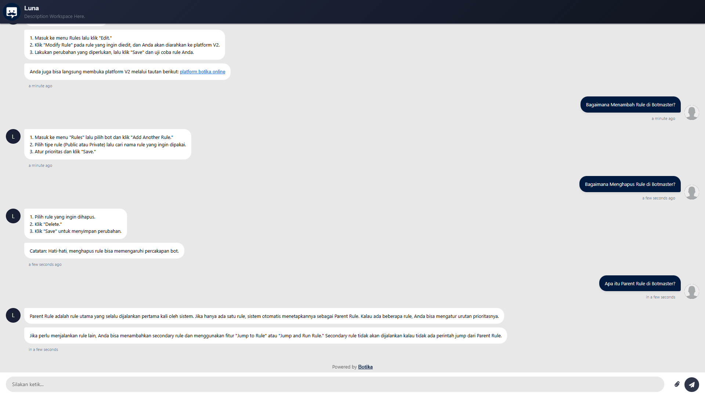 |
0.848 | PASS | 00:00:37 |
| Apa fungsi menu access di Botmaster? | Apa fungsi menu access di Botmaster? | Access adalah fitur untuk memberi izin ke anggota tim agar bisa masuk ke Chat Console, Analytics, atau menu lain. Jadi, bukan hanya pemilik akun utama yang bisa mengakses bot, tapi juga anggota tim sesuai izin. | Menu Access di Botmaster berfungsi untuk memberi izin ke anggota tim agar bisa masuk ke Chat Console, Analytics, atau menu lainnya. Jadi, bukan hanya pemilik akun utama yang bisa mengakses bot, tapi juga anggota tim sesuai izin yang diberikan. | Auto: ✓ Jawaban sudah sangat baik dan lengkap. Semua informasi penting yang diharapkan sudah tercakup dengan akurat. |
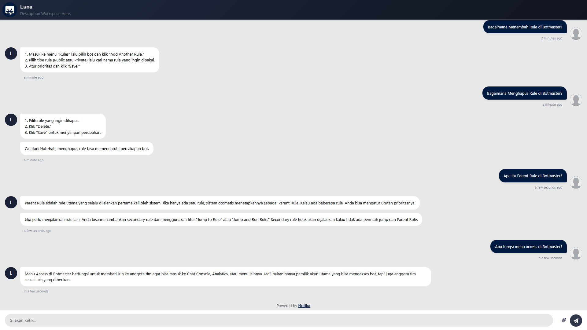 |
0.933 | PASS | 00:00:13 |
| Bagaimana Menambah Akses di Botmaster? | Bagaimana Menambah Akses di Botmaster? | Untuk memberikan izin ke anggota tim: buka menu Access lalu Add Access lalu masukkan email anggota lalu pilih peran atau izin jika ada lalu klik Send. Setelah itu, sistem akan mengirim undangan ke email mereka. | Untuk memberikan izin ke anggota tim di Botmaster, Anda bisa ikuti langkah ini: 1. Buka menu Access, lalu pilih Add Access. 2. Masukkan email anggota tim. 3. Pilih peran atau izin yang ingin diberikan, jika ada. 4. Klik Send. Setelah itu, sistem akan mengirim undangan ke email mereka. | Auto: ✓ Jawaban sudah sangat baik dan lengkap. Semua informasi penting yang diharapkan sudah tercakup dengan akurat. |
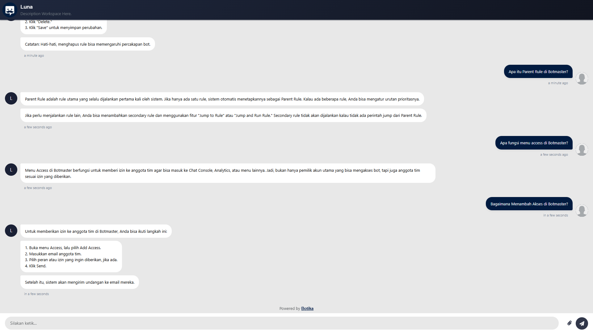 |
1 | PASS | 00:00:14 |
| Apa itu Undangan Akses via Email di Botmaster? | Apa itu Undangan Akses via Email di Botmaster? | Undangan akses ini bersifat invitation grant access, yaitu email yang diundang akan menerima pesan berisi tautan untuk mengonfirmasi undangan akses ke Botmaster. Setelah penerima mengonfirmasi tautan tersebut, mereka akan mendapatkan akses sesuai izin yang telah diberikan. | Undangan akses via email di Botmaster adalah jenis undangan grant access. Email yang diundang akan menerima pesan berisi tautan untuk mengonfirmasi undangan tersebut. Setelah penerima mengonfirmasi tautan, mereka akan mendapatkan akses sesuai izin yang telah diberikan. | Auto: ✓ Jawaban sudah sangat baik dan lengkap. Semua informasi penting yang diharapkan sudah tercakup dengan akurat. |
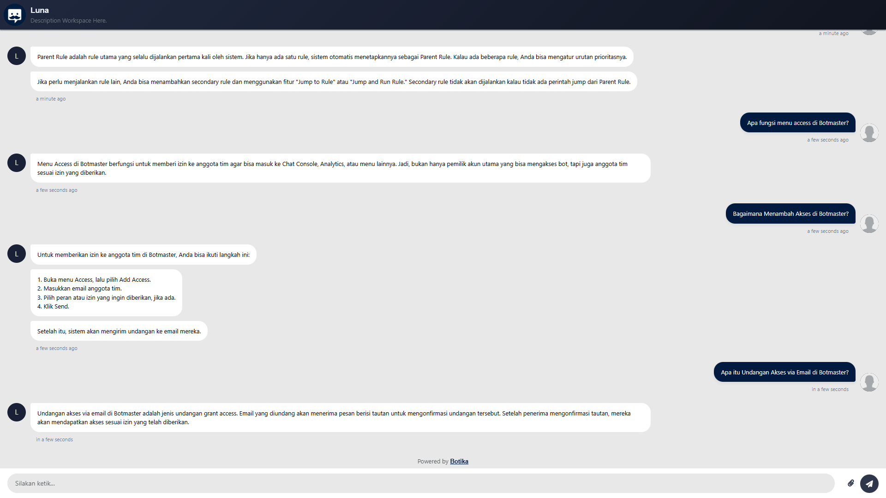 |
0.912 | PASS | 00:00:13 |
| Bagaimana Menghapus Akses di Botmaster? | Bagaimana Menghapus Akses di Botmaster? | Jika ada anggota tim yang sudah tidak membutuhkan akses, masuk ke menu Access, centang nama mereka, lalu klik Delete. Sistem akan meminta konfirmasi sebelum menghapus. | Untuk menghapus akses di Botmaster, Anda bisa ikuti langkah-langkah berikut: 1. Masuk ke menu Access. 2. Centang nama anggota tim yang ingin dihapus aksesnya. 3. Klik Delete. Sistem akan meminta konfirmasi sebelum menghapus akses tersebut. | Auto: ✓ Jawaban sudah cukup lengkap mencakup poin-poin utama. Bisa ditambahkan detail tentang jika, sudah untuk lebih komprehensif. |
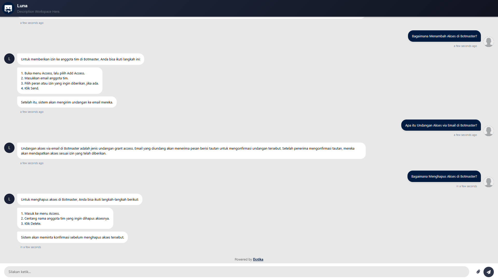 |
0.727 | PASS | 00:00:12 |
| Bagaimana yang terjadi jika saya menghapus semua akses tim di Botmaster? | Bagaimana yang terjadi jika saya menghapus semua akses tim di Botmaster? | Jika Anda klik Delete tanpa mencentang siapa pun, sistem akan menghapus semua akses. Gunakan dengan sangat hati-hati, agar tim lain tidak kehilangan akses tanpa sengaja. Hati-hati! Data akan hilang permanen dan belum bisa dikembalikan. | Jika Anda klik Delete tanpa mencentang siapa pun, sistem akan menghapus semua akses. Gunakan fitur ini dengan sangat hati-hati agar tim lain tidak kehilangan akses tanpa sengaja. Ingat ya, data yang dihapus akan hilang permanen dan belum bisa dikembalikan. | Auto: ✓ Jawaban sudah sangat baik dan lengkap. Semua informasi penting yang diharapkan sudah tercakup dengan akurat. |
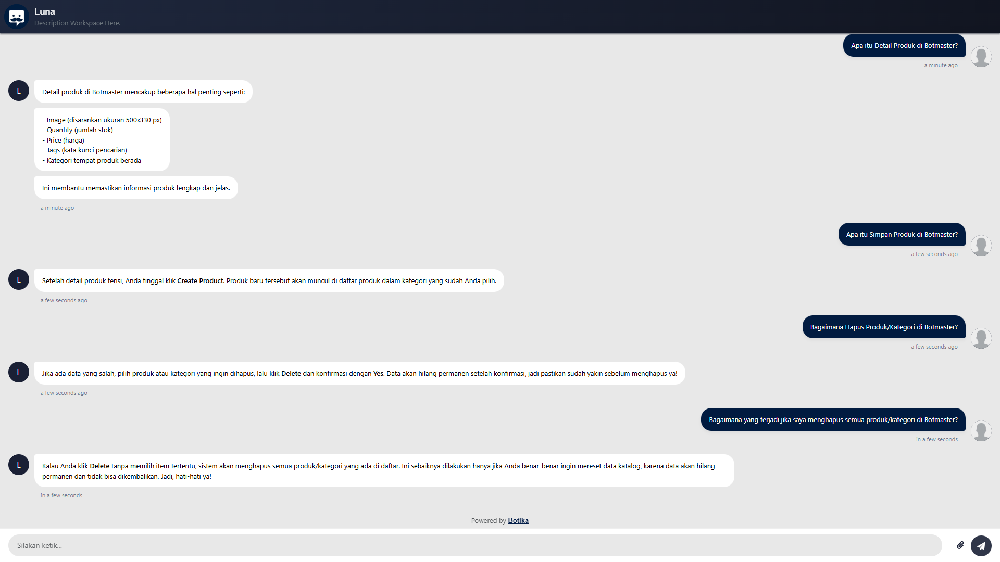 |
1 | PASS | 00:00:14 |
| Bagaimana Konfirmasi Hapus Akses di Botmaster? | Bagaimana Konfirmasi Hapus Akses di Botmaster? | Setelah klik Delete, sistem akan menampilkan popup konfirmasi. Baca baik-baik pesan konfirmasi, lalu klik Yes/Confirm jika yakin. | Setelah Anda klik Delete, sistem akan menampilkan popup konfirmasi. Pastikan untuk membaca baik-baik pesan konfirmasi tersebut. Jika sudah yakin, klik Yes/Confirm. | Auto: ✓ Jawaban sudah sangat baik dan lengkap. Semua informasi penting yang diharapkan sudah tercakup dengan akurat. |
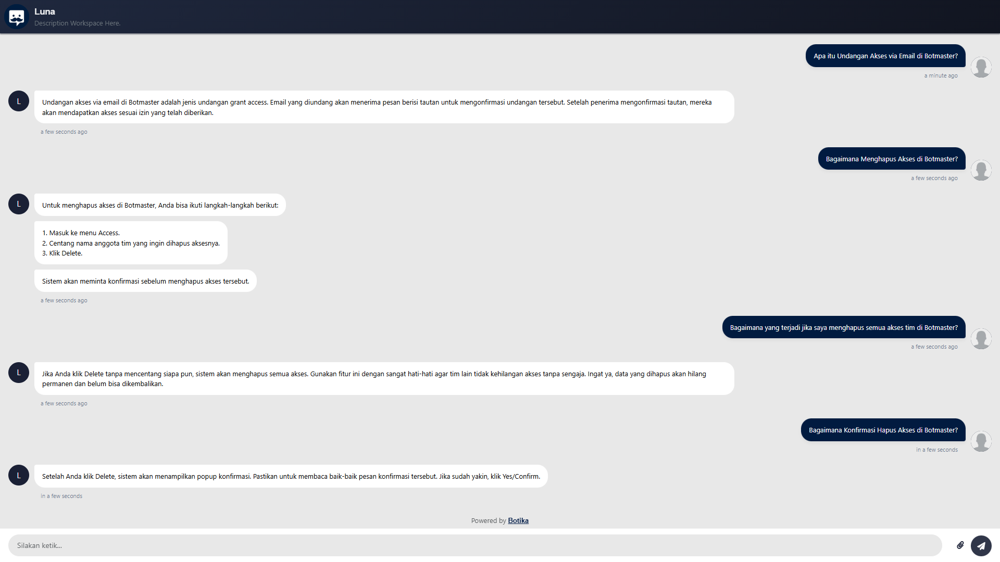 |
0.944 | PASS | 00:00:12 |
| Apa itu Cari Akses Tim di Botmaster? | Apa itu Cari Akses Tim di Botmaster? | Di halaman Access, gunakan kolom pencarian untuk menemukan anggota tim berdasarkan nama atau email. Tekan Enter untuk menampilkan hasil. | Di halaman Access di Botmaster, Anda bisa menggunakan kolom pencarian untuk menemukan anggota tim berdasarkan nama atau email mereka. Cukup tulis nama atau email yang dicari dan tekan Enter untuk menampilkan hasilnya. | Auto: ✓ Jawaban sudah sangat baik dan lengkap. Semua informasi penting yang diharapkan sudah tercakup dengan akurat. |
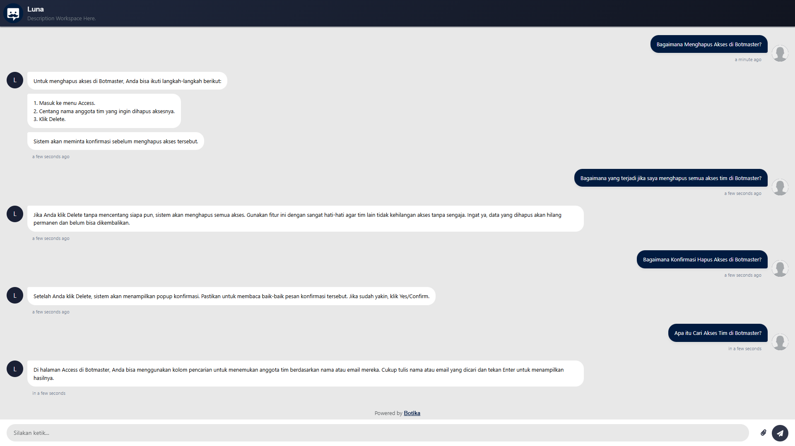 |
1 | PASS | 00:00:12 |
| Bagaimana cara menggunakan resource di Botmaster? | Bagaimana cara menggunakan resource di Botmaster? | Resource adalah tempat untuk menyimpan konten yang akan dipakai chatbot, misalnya teks jawaban FAQ, file audio untuk suara, video, atau dokumen yang bisa dipanggil dalam percakapan. | Resource di Botmaster adalah tempat untuk menyimpan konten seperti teks jawaban FAQ, file audio, video, atau dokumen yang akan digunakan dalam percakapan chatbot. Untuk menggunakan resource yang sudah dibuat, buka halaman Resource, lalu klik ikon Copy di kolom Content. Jika Type = Text, hasil copy berupa teks yang bisa langsung digunakan di rule atau balasan bot. Jika Type = Image, Audio, Video, atau Document, hasil copy berupa link yang bisa dipanggil di dalam rule/chat. Gunakan hasil copy sesuai kebutuhan pada rule, channel integrasi, atau balasan chatbot. | Auto: ✓ Jawaban sudah sangat baik dan lengkap. Semua informasi penting yang diharapkan sudah tercakup dengan akurat. |
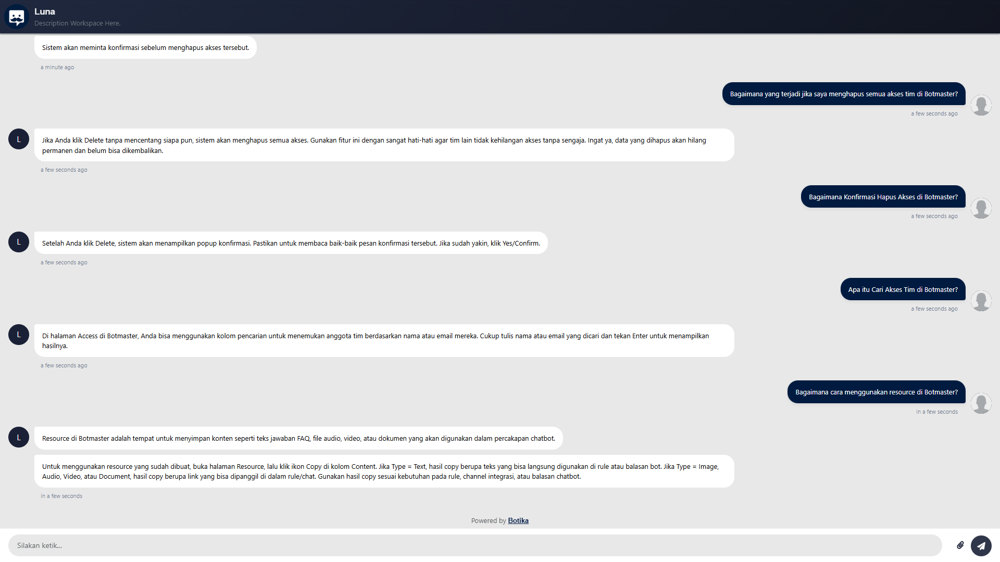 |
0.92 | PASS | 00:00:37 |
| Bagaimana cara menggunakan membuat resource di Botmaster? | Bagaimana cara menggunakan membuat resource di Botmaster? | Untuk membuat resource baru: buka menu Resource lalu Create Resource lalu isi judul, fungsi (FAQ/Media), tag (kata kunci), pilih tipe (Text, Audio, Video, Document), lalu upload file bila perlu lalu klik Create. | Untuk membuat resource baru di Botmaster, Anda bisa mengikuti langkah-langkah berikut: 1. Buka menu Resource. 2. Klik Create Resource. 3. Isi judul, fungsi (FAQ/Media), dan tag (kata kunci). 4. Pilih tipe (Text, Audio, Video, Document). 5. Upload file bila perlu. 6. Klik Create. Dengan begitu, resource baru Anda akan siap digunakan! | Auto: ✓ Jawaban sudah cukup lengkap mencakup poin-poin utama. Bisa ditambahkan detail tentang lalu, lalu untuk lebih komprehensif. |
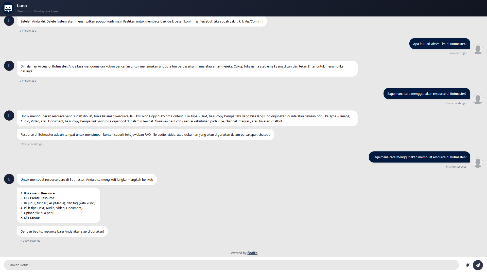 |
0.867 | PASS | 00:00:15 |
| Bagaimana cara menggunakan detail resource di Botmaster? | Bagaimana cara menggunakan detail resource di Botmaster? | Field pada Resource meliputi: Title (nama sumber), Function (tujuan, misalnya FAQ), Tags (kata kunci pencarian), Type (teks, audio, video, dokumen), dan File Upload (jika perlu). | Field pada Resource di Botmaster meliputi: - Title: Nama sumber. - Function: Tujuan, misalnya FAQ. - Tags: Kata kunci pencarian. - Type: Teks, audio, video, dokumen. - File Upload: Jika perlu. | Auto: ✓ Jawaban sudah sangat baik dan lengkap. Semua informasi penting yang diharapkan sudah tercakup dengan akurat. |
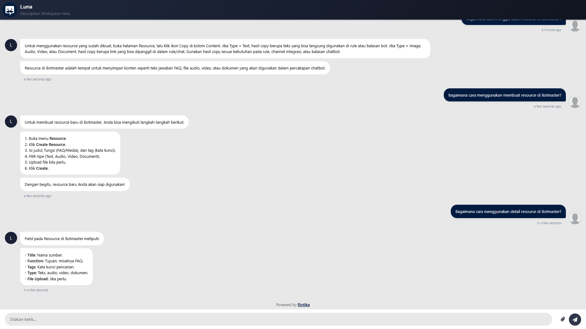 |
1 | PASS | 00:00:13 |
| Bagaimana cara menggunakan hapus resource di Botmaster? | Bagaimana cara menggunakan hapus resource di Botmaster? | Jika resource tidak dipakai, centang resource tersebut lalu klik Delete lalu Yes. Setelah konfirmasi, resource akan hilang dari daftar. | Jika resource tidak dipakai, centang resource tersebut lalu klik Delete lalu Yes. Setelah konfirmasi, resource akan hilang dari daftar. | Auto: ✓ Jawaban sudah sangat baik dan lengkap. Semua informasi penting yang diharapkan sudah tercakup dengan akurat. |
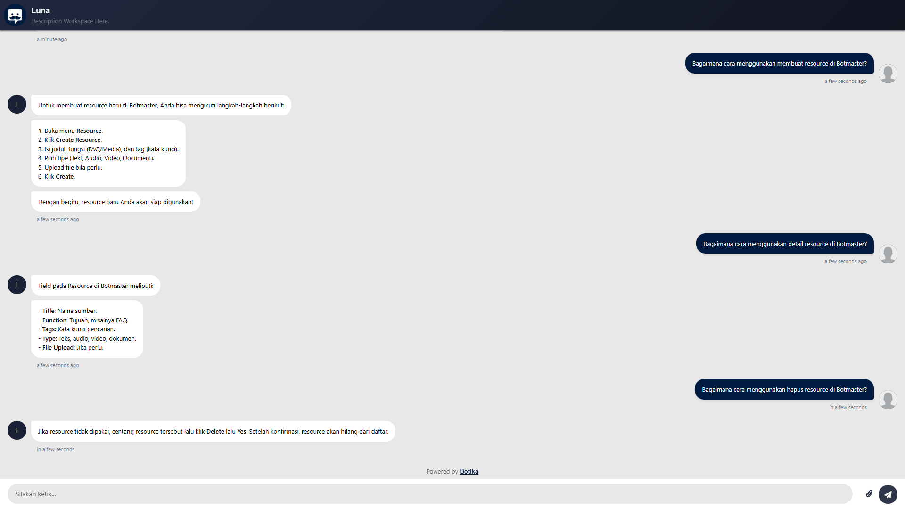 |
1 | PASS | 00:00:11 |
| Bagaimana yang terjadi jika saya menghapus semua resource di Botmaster? | Bagaimana yang terjadi jika saya menghapus semua resource di Botmaster? | Jika Anda klik Delete tanpa memilih resource, maka semua resource dalam daftar akan terhapus. Pastikan Anda benar-benar ingin menghapus semuanya sebelum melanjutkan. Hati-hati! Data akan hilang permanen dan belum bisa dikembalikan. | Jika Anda klik Delete tanpa memilih resource, maka semua resource dalam daftar akan terhapus. Pastikan Anda benar-benar ingin menghapus semuanya sebelum melanjutkan. Hati-hati! Data akan hilang permanen dan belum bisa dikembalikan. | Auto: ✓ Jawaban sudah sangat baik dan lengkap. Semua informasi penting yang diharapkan sudah tercakup dengan akurat. | 1 | PASS | 00:00:13 | |
| Bagaimana cara menggunakan cari resource di Botmaster? | Bagaimana cara menggunakan cari resource di Botmaster? | Gunakan kolom pencarian pada halaman Resource untuk mencari berdasarkan judul atau tag. Tekan Enter untuk melihat hasil pencarian. | Gunakan kolom pencarian pada halaman Resource untuk mencari berdasarkan judul atau tag. Tekan Enter untuk melihat hasil pencarian. | Auto: ✓ Jawaban sudah sangat baik dan lengkap. Semua informasi penting yang diharapkan sudah tercakup dengan akurat. | 1 | PASS | 00:00:12 | |
| Bagaimana cara menggunakan menggunakan resource di Botmaster? | Bagaimana cara menggunakan menggunakan resource di Botmaster? | Untuk menggunakan Resource yang sudah dibuat, buka halaman Resource lalu klik ikon Copy pada kolom Content. Jika Type = Text lalu hasil copy berupa teks yang bisa langsung dipakai di rule atau balasan bot. Jika Type = Image, Audio, Video, atau Document lalu hasil copy berupa link (tautan) yang bisa dipanggil di dalam rule/chat. Gunakan hasil copy sesuai kebutuhan pada rule, channel integrasi, atau balasan chatbot. | Untuk menggunakan Resource yang sudah dibuat, buka halaman Resource lalu klik ikon Copy pada kolom Content. Jika Type = Text lalu hasil copy berupa teks yang bisa langsung dipakai di rule atau balasan bot. Jika Type = Image, Audio, Video, atau Document lalu hasil copy berupa link (tautan) yang bisa dipanggil di dalam rule/chat. Gunakan hasil copy sesuai kebutuhan pada rule, channel integrasi, atau balasan chatbot. | Auto: ✓ Jawaban sudah sangat baik dan lengkap. Semua informasi penting yang diharapkan sudah tercakup dengan akurat. | 1 | PASS | 00:00:16 | |
| Bagaimana cara menggunakan catalog di Botmaster? | Bagaimana cara menggunakan catalog di Botmaster? | Catalog adalah fitur untuk menampilkan produk atau layanan di chatbot dalam bentuk kategori & produk, seperti etalase toko online. | Catalog adalah fitur untuk menampilkan produk atau layanan di chatbot dalam bentuk kategori & produk, seperti etalase toko online. | Auto: ✓ Jawaban sudah sangat baik dan lengkap. Semua informasi penting yang diharapkan sudah tercakup dengan akurat. | 1 | PASS | 00:00:12 | |
| Bagaimana Tambah Category di Botmaster? | Bagaimana Tambah Category di Botmaster? | Untuk membuat kategori: buka Catalog lalu Category lalu Add Category lalu isi nama kategori, deskripsi singkat, upload gambar jika ada, atur group dan posisi lalu klik Create. | Untuk menambah kategori di Botmaster, buka Catalog lalu pilih Category. Klik Add Category, isi nama kategori, deskripsi singkat, upload gambar jika ada, atur group dan posisi, lalu klik Create. | Auto: ✓ Jawaban sudah sangat baik dan lengkap. Semua informasi penting yang diharapkan sudah tercakup dengan akurat. | 0.957 | PASS | 00:00:13 | |
| Apa itu Detail Category di Botmaster? | Apa itu Detail Category di Botmaster? | Field kategori meliputi: Category Name (nama kategori), Description (penjelasan singkat), Image (gambar kategori), Group (pengelompokan), dan Position (urutan tampil). | Field kategori di Botmaster meliputi: - Category Name (nama kategori) - Description (penjelasan singkat) - Image (gambar kategori) - Group (pengelompokan) - Position (urutan tampil) | Auto: ✓ Jawaban sudah sangat baik dan lengkap. Semua informasi penting yang diharapkan sudah tercakup dengan akurat. | 1 | PASS | 00:00:37 | |
| Apa itu Simpan Category di Botmaster? | Apa itu Simpan Category di Botmaster? | Setelah semua field diisi, klik Create untuk menyimpan. Kategori baru akan langsung muncul di daftar. | Setelah semua field diisi, klik Create untuk menyimpan. Kategori baru akan langsung muncul di daftar. | Auto: ✓ Jawaban sudah sangat baik dan lengkap. Semua informasi penting yang diharapkan sudah tercakup dengan akurat. | 1 | PASS | 00:00:11 | |
| Bagaimana Tambah Produk di Botmaster? | Bagaimana Tambah Produk di Botmaster? | Untuk menambah produk: buka Catalog lalu Product lalu Add Product lalu isi nama produk, deskripsi, gambar, stok (quantity), harga, pilih kategori, atur posisi & tags lalu klik Create Product. | Untuk menambah produk di Botmaster, Anda bisa buka Catalog, lalu pilih Product, kemudian klik Add Product. Isi nama produk, deskripsi, gambar, stok (quantity), harga, pilih kategori, atur posisi & tags, lalu klik Create Product. | Auto: ✓ Jawaban sudah sangat baik dan lengkap. Semua informasi penting yang diharapkan sudah tercakup dengan akurat. | 1 | PASS | 00:00:13 | |
| Apa itu Detail Produk di Botmaster? | Apa itu Detail Produk di Botmaster? | Saat mengisi produk, beberapa hal penting: Image (disarankan ukuran 500x330 px), Quantity (jumlah stok), Price (harga), Tags (kata kunci pencarian), dan kategori tempat produk berada. | Detail produk di Botmaster mencakup beberapa hal penting seperti: - Image (disarankan ukuran 500x330 px) - Quantity (jumlah stok) - Price (harga) - Tags (kata kunci pencarian) - Kategori tempat produk berada Ini membantu memastikan informasi produk lengkap dan jelas. | Auto: ✓ Jawaban sudah sangat baik dan lengkap. Semua informasi penting yang diharapkan sudah tercakup dengan akurat. | 0.909 | PASS | 00:00:37 | |
| Apa itu Simpan Produk di Botmaster? | Apa itu Simpan Produk di Botmaster? | Setelah detail produk terisi, klik Create Product. Produk baru akan muncul di daftar produk dalam kategori yang dipilih. | Setelah detail produk terisi, Anda tinggal klik Create Product. Produk baru tersebut akan muncul di daftar produk dalam kategori yang sudah Anda pilih. | Auto: ✓ Jawaban sudah sangat baik dan lengkap. Semua informasi penting yang diharapkan sudah tercakup dengan akurat. | 1 | PASS | 00:00:13 | |
| Bagaimana Hapus Produk/Kategori di Botmaster? | Bagaimana Hapus Produk/Kategori di Botmaster? | Jika ada data yang salah, pilih produk atau kategori lalu klik Delete lalu Yes. Data akan hilang permanen setelah konfirmasi. | Jika ada data yang salah, pilih produk atau kategori yang ingin dihapus, lalu klik Delete dan konfirmasi dengan Yes. Data akan hilang permanen setelah konfirmasi, jadi pastikan sudah yakin sebelum menghapus ya! | Auto: ✓ Jawaban sudah sangat baik dan lengkap. Semua informasi penting yang diharapkan sudah tercakup dengan akurat. | 1 | PASS | 00:00:13 | |
| Bagaimana yang terjadi jika saya menghapus semua produk/kategori di Botmaster? | Bagaimana yang terjadi jika saya menghapus semua produk/kategori di Botmaster? | Jika klik Delete tanpa memilih item tertentu, sistem akan menghapus semua produk/kategori yang ada di daftar. Gunakan hanya jika benar-benar ingin mereset data katalog. Hati-hati! Data akan hilang permanen dan belum bisa dikembalikan. | Kalau Anda klik Delete tanpa memilih item tertentu, sistem akan menghapus semua produk/kategori yang ada di daftar. Ini sebaiknya dilakukan hanya jika Anda benar-benar ingin mereset data katalog, karena data akan hilang permanen dan tidak bisa dikembalikan. Jadi, hati-hati ya! | Auto: ✓ Jawaban sudah sangat baik dan lengkap. Semua informasi penting yang diharapkan sudah tercakup dengan akurat. | 0.97 | PASS | 00:00:13 | |
| Apa itu Cari Produk/Kategori di Botmaster? | Apa itu Cari Produk/Kategori di Botmaster? | Gunakan kolom pencarian di atas daftar Catalog. Ketik nama produk atau kategori lalu tekan Enter. Hasil akan muncul sesuai kata kunci. | Gunakan kolom pencarian di atas daftar Catalog. Cukup ketik nama produk atau kategori yang Anda cari, lalu tekan Enter. Hasil pencarian akan muncul sesuai dengan kata kunci yang Anda masukkan. | Auto: ✓ Jawaban sudah sangat baik dan lengkap. Semua informasi penting yang diharapkan sudah tercakup dengan akurat. | 1 | PASS | 00:00:12 | |
| Apa itu Chat Console di Botmaster? | Apa itu Chat Console di Botmaster? | Chat Console adalah menu untuk melihat percakapan pengguna secara real-time. Di sini, owner bot atau akun yang sudah diberi akses ke bot tersebut dapat membalas chat, membuat tiket, atau mengekspor riwayat percakapan. | Chat Console di Botmaster adalah menu untuk melihat percakapan pengguna secara real-time. Di sini, owner bot atau akun yang sudah diberi akses ke bot tersebut dapat membalas chat, membuat tiket, atau mengekspor riwayat percakapan. | Auto: ✓ Jawaban sudah sangat baik dan lengkap. Semua informasi penting yang diharapkan sudah tercakup dengan akurat. | 1 | PASS | 00:00:12 | |
| Apa itu Lihat Percakapan di Botmaster? | Apa itu Lihat Percakapan di Botmaster? | Pada panel kiri terdapat daftar percakapan. Klik salah satu untuk membuka detail percakapan di panel utama. Percakapan terbaru biasanya berada di atas. | Pada panel kiri di Botmaster terdapat daftar percakapan. Anda bisa klik salah satu percakapan untuk membuka detailnya di panel utama. Percakapan terbaru biasanya ada di bagian atas daftar. | Auto: ✓ Jawaban sudah sangat baik dan lengkap. Semua informasi penting yang diharapkan sudah tercakup dengan akurat. | 1 | PASS | 00:00:12 | |
| Apa itu Balas Pesan di Botmaster? | Apa itu Balas Pesan di Botmaster? | Untuk membalas pengguna, ketik pesan di kolom input bawah, lalu tekan Enter atau tekan tombol Send. Gunakan bahasa yang ramah dan jelas agar user merasa nyaman. | Untuk membalas pengguna di Botmaster, Anda cukup mengetik pesan di kolom input di bagian bawah, lalu tekan Enter atau tombol Send. Gunakan bahasa yang ramah dan jelas agar pengguna merasa nyaman. | Auto: ✓ Jawaban sudah sangat baik dan lengkap. Semua informasi penting yang diharapkan sudah tercakup dengan akurat. | 0.917 | PASS | 00:00:13 | |
| Apa itu Cari Percakapan di Botmaster? | Apa itu Cari Percakapan di Botmaster? | Jika ingin menemukan percakapan tertentu, gunakan fitur Search. Ketik nama, ID, atau nomor pengguna, lalu tekan Enter. | Jika Anda ingin menemukan percakapan tertentu di Botmaster, gunakan fitur Search. Cukup ketik nama, ID, atau nomor pengguna, lalu tekan Enter untuk mencari percakapan yang Anda inginkan. | Auto: ✓ Jawaban sudah sangat baik dan lengkap. Semua informasi penting yang diharapkan sudah tercakup dengan akurat. | 1 | PASS | 00:00:12 | |
| Apa itu Filter Percakapan di Botmaster? | Apa itu Filter Percakapan di Botmaster? | Gunakan menu Filter List Person untuk menyaring percakapan berdasarkan channel (misalnya WebChat, WhatsApp, Messenger), agar agen bisa fokus pada kanal tertentu. | Di Botmaster, Anda bisa menggunakan menu Filter List Person untuk menyaring percakapan berdasarkan channel, seperti WebChat, WhatsApp, atau Messenger. Ini membantu agen untuk fokus pada kanal tertentu. | Auto: ✓ Jawaban sudah sangat baik dan lengkap. Semua informasi penting yang diharapkan sudah tercakup dengan akurat. | 0.905 | PASS | 00:00:12 | |
| Bagaimana Membuat Tiket di Botmaster? | Bagaimana Membuat Tiket di Botmaster? | Jika percakapan membutuhkan tindak lanjut, klik Create Ticket. Isi detail tiket sesuai kebutuhan, lalu klik konfirmasi. Tiket berguna untuk memantau masalah yang belum selesai. | Untuk membuat tiket di Botmaster, jika percakapan membutuhkan tindak lanjut, Anda bisa klik Create Ticket. Isi detail tiket sesuai kebutuhan, lalu klik konfirmasi. Tiket ini berguna untuk memantau masalah yang belum selesai. | Auto: ✓ Jawaban sudah sangat baik dan lengkap. Semua informasi penting yang diharapkan sudah tercakup dengan akurat. | 1 | PASS | 00:00:13 | |
| Apa itu Ekspor Chat Log di Botmaster? | Apa itu Ekspor Chat Log di Botmaster? | Untuk menyimpan percakapan, klik Export Message. Sistem akan mengunduh riwayat chat dalam dataat CSV yang bisa dibuka di Excel. | Untuk menyimpan percakapan di Botmaster, Anda bisa klik Export Message. Sistem akan mengunduh riwayat chat dalam format CSV yang bisa dibuka di Excel. | Auto: ✓ Jawaban sudah sangat baik dan lengkap. Semua informasi penting yang diharapkan sudah tercakup dengan akurat. | 0.941 | PASS | 00:00:13 | |
| Apa itu Detail User di Chat Console di Botmaster? | Apa itu Detail User di Chat Console di Botmaster? | Klik ikon i (info) di percakapan untuk melihat detail user, seperti nama/alias, channel yang digunakan, riwayat percakapan, dan kontak jika ada. | Di Chat Console Botmaster, Anda bisa klik ikon i (info) di percakapan untuk melihat detail user. Informasi yang bisa Anda lihat antara lain nama/alias, channel yang digunakan, riwayat percakapan, dan kontak jika ada. | Auto: ✓ Jawaban sudah sangat baik dan lengkap. Semua informasi penting yang diharapkan sudah tercakup dengan akurat. | 1 | PASS | 00:00:13 | |
| Bagaimana Edit Detail User di Botmaster? | Bagaimana Edit Detail User di Botmaster? | Klik ikon pensil di halaman detail user untuk menambahkan alias, memperbaiki nama, atau mengupdate indataasi pengguna. | Untuk mengedit detail user di Botmaster, Anda bisa klik ikon pensil di halaman detail user. Dari sana, Anda dapat menambahkan alias, memperbaiki nama, atau mengupdate informasi pengguna sesuai kebutuhan. | Auto: ✓ Jawaban sudah sangat baik dan lengkap. Semua informasi penting yang diharapkan sudah tercakup dengan akurat. | 0.933 | PASS | 00:00:10 | |
| Apa itu Ganti Agen Chat di Botmaster? | Apa itu Ganti Agen Chat di Botmaster? | Untuk mengambil alih percakapan, pilih nama Anda dari dropdown agent list. Percakapan akan berpindah status menjadi ditangani oleh Anda. | Untuk mengambil alih percakapan di Botmaster, Anda bisa memilih nama Anda dari dropdown agent list. Setelah itu, status percakapan akan berpindah menjadi ditangani oleh Anda. | Auto: ✓ Jawaban sudah sangat baik dan lengkap. Semua informasi penting yang diharapkan sudah tercakup dengan akurat. | 0.947 | PASS | 00:00:13 | |
| Apa itu Status Not Handled di Botmaster? | Apa itu Status Not Handled di Botmaster? | Status Not Handled berarti percakapan belum diambil oleh agen mana pun. Segera ambil alih jika butuh respon manual agar user tidak menunggu terlalu lama. | Status Not Handled berarti percakapan belum diambil oleh agen mana pun. Jadi, kalau ada yang butuh respon manual, segera ambil alih biar user gak nunggu terlalu lama. | Auto: ✓ Jawaban sudah cukup lengkap mencakup poin-poin utama. Bisa ditambahkan detail tentang jika, agar untuk lebih komprehensif. | 0.864 | PASS | 00:00:13 | |
| Apa itu Tutup Tiket di Botmaster? | Apa itu Tutup Tiket di Botmaster? | Jika masalah sudah selesai, klik Close Ticket, lalu muncul pop up untuk konfirmasi, kemudian pilih confirm untuk menutup ticket. Setelah itu, tiket akan ditandai selesai. | Jika masalah sudah selesai, klik Close Ticket, lalu akan muncul pop-up untuk konfirmasi. Pilih confirm untuk menutup tiket. Setelah itu, tiket akan ditandai selesai. | Auto: ✓ Jawaban sudah sangat baik dan lengkap. Semua informasi penting yang diharapkan sudah tercakup dengan akurat. | 0.955 | PASS | 00:00:13 | |
| Apa fungsi logs di Botmaster? | Apa fungsi logs di Botmaster? | Logs adalah fitur di Botmaster yang menyimpan data hasil pencatatan dari rule melalui fungsi writelog. Fitur ini berguna untuk melakukan debugging atau menelusuri jalannya percakapan pada chatbot. Perlu diperhatikan, log aktivitas seperti login, pembuatan bot, pengeditan rule, atau penghapusan resource tidak tercatat dalam fitur ini. Dokumentasi terkait fungsi log dapat dilihat di: https://client.botika.online/docs/platform/function.html#log | Logs di Botmaster menyimpan data hasil pencatatan dari rule melalui fungsi writelog. Fitur ini berguna banget buat debugging atau menelusuri jalannya percakapan pada chatbot. Tapi, perlu diingat bahwa log aktivitas seperti login, pembuatan bot, pengeditan rule, atau penghapusan resource tidak tercatat dalam fitur ini. | Auto: ✓ Jawaban sudah cukup lengkap mencakup poin-poin utama. Bisa ditambahkan detail tentang adalah, yang untuk lebih komprehensif. | 0.736 | PASS | 00:00:37 | |
| Apa itu Atur Banyak Log di Botmaster? | Apa itu Atur Banyak Log di Botmaster? | Gunakan menu Show Entries untuk menentukan berapa banyak baris log yang ingin ditampilkan per halaman (misalnya 10, 25, 50). | Di Botmaster, Anda bisa menggunakan menu Show Entries untuk menentukan berapa banyak baris log yang ingin ditampilkan per halaman, misalnya 10, 25, atau 50. Jadi, Anda bisa sesuaikan tampilan log sesuai kebutuhan Anda. | Auto: ✓ Jawaban sudah sangat baik dan lengkap. Semua informasi penting yang diharapkan sudah tercakup dengan akurat. | 1 | PASS | 00:00:13 | |
| Apa fungsi cari logs di Botmaster? | Apa fungsi cari logs di Botmaster? | Jika ingin mencari aktivitas tertentu, gunakan kolom Search. Ketik kata kunci terkait lalu tekan Enter. | Kalau Anda mau mencari aktivitas tertentu di Botmaster, bisa banget pakai kolom Search. Tinggal ketik kata kunci yang berhubungan, lalu tekan Enter. Gampang, kan? | Auto: ✓ Jawaban sudah cukup lengkap mencakup poin-poin utama. Bisa ditambahkan detail tentang jika, ingin untuk lebih komprehensif. | 0.8 | PASS | 00:00:12 | |
| Apa fungsi filter logs di Botmaster? | Apa fungsi filter logs di Botmaster? | Gunakan filter tanggal (hari, rentang, bulan, atau tahun) untuk mempersempit hasil log sesuai periode tertentu. | Di Botmaster, Anda bisa pakai filter tanggal (hari, rentang, bulan, atau tahun) buat mempersempit hasil log sesuai periode yang Anda inginkan. Ini memudahkan banget kalau Anda mau fokus pada data dari periode tertentu aja. | Auto: ✓ Jawaban sudah baik dan mencakup sebagian besar informasi yang dibutuhkan. Akan lebih sempurna jika ditambahkan informasi tentang gunakan dan untuk. | 0.857 | PASS | 00:00:10 | |
| Apa fungsi menu banned di Botmaster? | Apa fungsi menu banned di Botmaster? | Menu Banned menampilkan daftar pengguna yang diblokir pada channel tertentu. Fitur ini penting untuk mengatasi spam atau penyalahgunaan sistem. Sistem Botmaster menerapkan rate limit untuk mengendalikan spam: Base Limit: 1. Broad base limit: 500 pesan / hari 2. Regular base limit: 60 pesan / 3 menit 3. Untuk user yang pernah terkena staged limit: 15 pesan / 3 menit Staged Limit: 1. Stage 0: melanggar regular base limit 3x/4 jam lalu banned 10 jam 2. Stage 1: melanggar stage 0 2x/24 jam lalu banned 5 hari 3. Stage 2: melanggar stage 1 2x/15 hari lalu banned 35 hari 4. Stage 3: melanggar stage 2 2x/90 hari lalu banned 200 hari | Menu Banned di Botmaster digunakan buat menampilkan daftar pengguna yang diblokir di channel tertentu. Fitur ini penting banget buat mengatasi spam atau penyalahgunaan sistem. Jadi, kalau ada pengguna yang melanggar batasan, bisa diblokir sementara atau permanen sesuai aturan yang berlaku. | Auto: ✗ Jawaban tidak cukup relevan dengan yang diharapkan. Sebagian besar informasi penting seperti untuk, menerapkan, rate tidak disebutkan. | 0.382 | FAILED | 00:00:15 | |
| Apa itu Spam User di Botmaster? | Apa itu Spam User di Botmaster? | Sistem Botmaster bisa otomatis menandai dan memblokir sementara pengguna yang mengirim pesan spam berulang-ulang, agar channel tetap aman. | Di Botmaster, Spam User itu pengguna yang kirim pesan berulang-ulang secara otomatis bisa ditandai dan diblokir sementara. Ini supaya channel tetap aman dan nyaman buat semua pengguna. | Auto: ✓ Jawaban sudah cukup lengkap mencakup poin-poin utama. Bisa ditambahkan detail tentang sistem, menandai untuk lebih komprehensif. | 0.722 | PASS | 00:00:13 | |
| Apa itu Banned Permanen di Botmaster? | Apa itu Banned Permanen di Botmaster? | Jika pengguna tetap melakukan spam atau pelanggaran berulang, status banned dapat diubah menjadi permanen oleh admin setelah evaluasi. | Kalau pengguna terus melakukan spam atau pelanggaran berulang, status banned-nya bisa diubah jadi permanen oleh admin setelah evaluasi. Jadi, hati-hati ya biar nggak sampai kena banned permanen! | Auto: ✓ Jawaban sudah cukup lengkap mencakup poin-poin utama. Bisa ditambahkan detail tentang jika, tetap untuk lebih komprehensif. | 0.833 | PASS | 00:00:12 | |
| Apa itu Lihat Daftar Banned di Botmaster? | Apa itu Lihat Daftar Banned di Botmaster? | Untuk melihat siapa saja yang diblokir, pilih Channel dan Status (sementara/permanen), lalu klik Check Banned Users. | Untuk lihat siapa aja yang diblokir di Botmaster, Anda bisa pilih Channel dan Status (sementara atau permanen), terus klik Check Banned Users. Gampang, kan? | Auto: ✓ Jawaban sudah sangat baik dan lengkap. Semua informasi penting yang diharapkan sudah tercakup dengan akurat. | 0.938 | PASS | 00:00:13 | |
| Apa itu Filter Banned di Botmaster? | Apa itu Filter Banned di Botmaster? | Anda bisa memfilter daftar banned berdasarkan channel (misalnya WhatsApp atau WebChat) dan status banned (sementara/permanen) agar lebih fokus. | Filter Banned di Botmaster memungkinkan Anda untuk memfilter daftar banned berdasarkan channel, seperti WhatsApp atau WebChat, dan status banned, apakah sementara atau permanen. Ini bikin lebih fokus dan efisien! | Auto: ✓ Jawaban sudah cukup lengkap mencakup poin-poin utama. Bisa ditambahkan detail tentang bisa, misalnya untuk lebih komprehensif. | 0.833 | PASS | 00:00:13 | |
| Apa yang ditampilkan pada analytics di Botmaster? | Apa yang ditampilkan pada analytics di Botmaster? | Menu Analytics menyediakan laporan perdataa bot secara menyeluruh, mulai dari pesan masuk, pesan keluar, jumlah pengguna, hingga detail percakapan. | Menu Analytics di Botmaster menampilkan laporan data bot secara menyeluruh, mulai dari pesan masuk, pesan keluar, jumlah pengguna, sampai detail percakapan. Semua info penting ada di sana! | Auto: ✓ Jawaban sudah sangat baik dan lengkap. Semua informasi penting yang diharapkan sudah tercakup dengan akurat. | 0.944 | PASS | 00:00:13 | |
| Apa yang ditampilkan pada dashboard analytics di Botmaster? | Apa yang ditampilkan pada dashboard analytics di Botmaster? | Di halaman dashboard analytics, Anda bisa melihat ringkasan berupa grafik: Message Activity, User Activity, dan Conversation Activity. | Di dashboard analytics Botmaster, Anda bisa melihat ringkasan berupa grafik untuk tiga aktivitas utama: Message Activity, User Activity, dan Conversation Activity. Jadi, Anda bisa memantau dengan mudah! | Auto: ✓ Jawaban sudah sangat baik dan lengkap. Semua informasi penting yang diharapkan sudah tercakup dengan akurat. | 0.933 | PASS | 00:00:16 | |
| Apa itu User Activity di Botmaster? | Apa itu User Activity di Botmaster? | Bagian ini menampilkan jumlah pengguna aktif. Ada dua jenis laporan: YTD Registered Users (pengguna unik tahun berjalan) dan Lifetime Registered Users (jumlah total pengguna unik sejak awal). | User Activity di Botmaster menampilkan jumlah pengguna aktif. Ada dua jenis laporan di sini: YTD Registered Users, yang menunjukkan pengguna unik tahun berjalan, dan Lifetime Registered Users, yang menunjukkan total pengguna unik sejak awal. Jadi, bisa lihat seberapa banyak pengguna yang terlibat! | Auto: ✓ Jawaban sudah sangat baik dan lengkap. Semua informasi penting yang diharapkan sudah tercakup dengan akurat. | 0.955 | PASS | 00:00:14 | |
| Apa itu Conversation Activity di Botmaster? | Apa itu Conversation Activity di Botmaster? | Menampilkan statistik percakapan, seperti Total Conversation, Rata-rata percakapan per user (Avg. Conv./User), dan Durasi rata-rata percakapan (Avg. Conv. Length). | Conversation Activity di Botmaster menampilkan statistik percakapan seperti Total Conversation, Rata-rata percakapan per user (Avg. Conv./User), dan Durasi rata-rata percakapan (Avg. Conv. Length). Jadi, Anda bisa lihat bagaimana interaksi pengguna dengan bot berlangsung! | Auto: ✓ Jawaban sudah sangat baik dan lengkap. Semua informasi penting yang diharapkan sudah tercakup dengan akurat. | 1 | PASS | 00:00:14 | |
| Apa itu Action - Broadcast di Botmaster? | Apa itu Action - Broadcast di Botmaster? | Laporan broadcast menampilkan hasil dari pesan massal: Total Sent (terkirim), Delivered (sampai), Read (dibaca), Drop (belum berhasil), dan Replied (yang membalas). | Action - Broadcast di Botmaster menampilkan laporan dari pesan massal yang Anda kirimkan. Laporan tersebut mencakup Total Sent (terkirim), Delivered (sampai), Read (dibaca), Drop (belum berhasil), dan Replied (yang membalas). Jadi, Anda bisa mengevaluasi hasil dari kampanye pesan massal Anda! | Auto: ✓ Jawaban sudah sangat baik dan lengkap. Semua informasi penting yang diharapkan sudah tercakup dengan akurat. | 1 | PASS | 00:00:14 | |
| Apa itu Action - Report di Botmaster? | Apa itu Action - Report di Botmaster? | Report mengelompokkan percakapan sesuai kategori yang sudah Anda atur dalam rule (menggunakan fungsi writeReport), sehingga mudah menganalisis topik yang sering ditanyakan. | Action - Report di Botmaster mengelompokkan percakapan sesuai dengan kategori yang sudah Anda atur dalam rule menggunakan fungsi writeReport. Ini memudahkan Anda menganalisis topik yang sering ditanyakan oleh pengguna. | Auto: ✓ Jawaban sudah sangat baik dan lengkap. Semua informasi penting yang diharapkan sudah tercakup dengan akurat. | 0.952 | PASS | 00:00:14 | |
| Apa itu Audience - Engagement di Botmaster? | Apa itu Audience - Engagement di Botmaster? | Engagement menunjukkan tingkat interaksi pengguna, seperti Total Users, Duration (lama interaksi), dan Messages (jumlah pesan terkirim). | Audience - Engagement di Botmaster menunjukkan tingkat interaksi pengguna, seperti Total Users, Duration (lama interaksi), dan Messages (jumlah pesan terkirim). Ini membantu Anda memahami seberapa aktif pengguna berinteraksi dengan bot Anda! | Auto: ✓ Jawaban sudah sangat baik dan lengkap. Semua informasi penting yang diharapkan sudah tercakup dengan akurat. | 1 | PASS | 00:00:12 | |
| Apa itu Audience - Users di Botmaster? | Apa itu Audience - Users di Botmaster? | Bagian ini menampilkan data pengguna: Total Users, New Users (pengguna baru), Returning Users (yang kembali), dan Unique Users (pengguna unik tanpa duplikasi). | Audience - Users di Botmaster menampilkan data pengguna, termasuk Total Users, New Users (pengguna baru), Returning Users (pengguna yang kembali), dan Unique Users (pengguna unik tanpa duplikasi). Ini membantu Anda memantau pertumbuhan dan keterlibatan pengguna! | Auto: ✓ Jawaban sudah sangat baik dan lengkap. Semua informasi penting yang diharapkan sudah tercakup dengan akurat. | 0.947 | PASS | 00:00:14 | |
| Apa itu Unique Active Users di Botmaster? | Apa itu Unique Active Users di Botmaster? | Data ini menampilkan jumlah pengguna unik yang benar-benar aktif di periode tertentu. Berguna untuk mengukur seberapa luas jangkauan bot Anda. | Unique Active Users di Botmaster menampilkan jumlah pengguna unik yang benar-benar aktif dalam periode tertentu. Ini berguna untuk mengukur seberapa luas jangkauan bot Anda. | Auto: ✓ Jawaban sudah sangat baik dan lengkap. Semua informasi penting yang diharapkan sudah tercakup dengan akurat. | 0.944 | PASS | 00:00:11 | |
| Apa itu Message Count di Botmaster? | Apa itu Message Count di Botmaster? | Statistik yang menampilkan jumlah pesan masuk (Incoming), pesan keluar (Outgoing), dan total percakapan di periode tertentu. | Message Count di Botmaster adalah statistik yang menampilkan jumlah pesan masuk (Incoming), pesan keluar (Outgoing), dan total percakapan dalam periode tertentu. Ini membantu Anda memantau aktivitas pesan secara detail! | Auto: ✓ Jawaban sudah sangat baik dan lengkap. Semua informasi penting yang diharapkan sudah tercakup dengan akurat. | 1 | PASS | 00:00:13 | |
| Apa itu Conversation Detail di Botmaster? | Apa itu Conversation Detail di Botmaster? | Menampilkan detail setiap percakapan: User ID, Tanggal/Waktu, Nama atau No HP (jika ada), Channel, Incoming Message, Outgoing Message, Total Messages, Duration, Session ID. | Conversation Detail di Botmaster menampilkan detail setiap percakapan yang meliputi: User ID, Tanggal/Waktu, Nama atau No HP (jika ada), Channel, Incoming Message, Outgoing Message, Total Messages, Duration, dan Session ID. Ini membantu Anda memeriksa setiap interaksi secara rinci! | Auto: ✓ Jawaban sudah sangat baik dan lengkap. Semua informasi penting yang diharapkan sudah tercakup dengan akurat. | 1 | PASS | 00:00:15 | |
| Apa fungsi main menu analytics di Botmaster? | Apa fungsi main menu analytics di Botmaster? | Menunjukkan seberapa sering pengguna mengakses menu utama chatbot (Main Menu). Data ini bisa membantu Anda mengetahui fitur mana yang paling sering digunakan. Agar data ini tercatat, perlu menambahkan analyticTrack("menu", $msg) pada rule yang digunakan. | Main Menu Analytics di Botmaster berfungsi untuk menunjukkan seberapa sering pengguna mengakses menu utama chatbot. Data ini bisa membantu Anda mengetahui fitur mana yang paling sering digunakan. Untuk mencatat data ini, Anda perlu menambahkan `analyticTrack("menu", $msg)` pada rule yang digunakan. | Auto: ✓ Jawaban sudah sangat baik dan lengkap. Semua informasi penting yang diharapkan sudah tercakup dengan akurat. | 0.938 | PASS | 00:00:14 | |
| Apa itu Unknown Conversation di Botmaster? | Apa itu Unknown Conversation di Botmaster? | Unknown adalah daftar pertanyaan yang tidak dikenali oleh bot. Data ini berguna untuk menambahkan rule atau FAQ baru agar bot semakin pintar. Agar setiap pertanyaan yang tidak dikenali dapat tercatat, perlu menambahkan analyticTrack("unknown", $msg) pada rule yang digunakan. | Unknown Conversation di Botmaster adalah daftar pertanyaan yang tidak dikenali oleh bot. Data ini berguna untuk menambahkan rule atau FAQ baru agar bot semakin pintar. Untuk mencatat setiap pertanyaan yang tidak dikenali, perlu menambahkan `analyticTrack("unknown", $msg)` pada rule yang digunakan. | Auto: ✓ Jawaban sudah sangat baik dan lengkap. Semua informasi penting yang diharapkan sudah tercakup dengan akurat. | 0.941 | PASS | 00:00:14 | |
| Apa itu Not Handled Conversation di Botmaster? | Apa itu Not Handled Conversation di Botmaster? | Laporan ini menampilkan jumlah percakapan yang belum berhasil, ditangani bot maupun agen. Dari sini, Anda bisa mengevaluasi kebutuhan tambahan agen atau perbaikan rule. | Not Handled Conversation di Botmaster adalah laporan yang menampilkan jumlah percakapan yang belum berhasil ditangani oleh bot maupun agen. Ini penting untuk mengevaluasi apakah Anda membutuhkan tambahan agen atau perlu memperbaiki rule yang ada. | Auto: ✓ Jawaban sudah cukup lengkap mencakup poin-poin utama. Bisa ditambahkan detail tentang dari, bisa untuk lebih komprehensif. | 0.81 | PASS | 00:00:13 | |
| Apa saja fitur analytics umum di Botmaster? | Apa saja fitur analytics umum di Botmaster? | Hampir semua laporan di Analytics bisa diunduh dalam dataat CSV/XLSX dan difilter berdasarkan tanggal. Ini memudahkan jika ingin membuat laporan eksternal. | Fitur analytics umum di Botmaster memungkinkan Anda mengunduh hampir semua laporan dalam format CSV/XLSX dan memfilter data berdasarkan tanggal. Ini memudahkan jika Anda perlu membuat laporan eksternal. | Auto: ✓ Jawaban sudah baik dan mencakup sebagian besar informasi yang dibutuhkan. Akan lebih sempurna jika ditambahkan informasi tentang bisa dan ingin. | 0.889 | PASS | 00:00:12 | |
| Bagaimana Logout di Botmaster? | Bagaimana Logout di Botmaster? | Untuk keluar dari Botmaster, klik ikon profil di kanan atas, lalu pilih Logout. Anda akan diarahkan ke halaman utama, dan sesi login akan berakhir. | Untuk logout dari Botmaster, Anda cukup klik ikon profil di kanan atas, lalu pilih Logout. Anda akan diarahkan ke halaman utama dan sesi login Anda akan berakhir. | Auto: ✓ Jawaban sudah sangat baik dan lengkap. Semua informasi penting yang diharapkan sudah tercakup dengan akurat. | 1 | PASS | 00:00:15 | |
| Bagaimana cara integrasi whatsapp di Botmaster? | Bagaimana cara integrasi whatsapp di Botmaster? | Untuk mengintegrasikan bot dengan channel whatsapp: 1. Masuk ke menu Integration di dashboard Botmaster, kemudian pilih WhatsApp, 2. Lengkapi data konfigurasi sesuai instruksi, 3. Simpan pengaturan dan lakukan uji coba. Untuk panduan lebih lengkap, silakan lihat dokumentasi resmi di: https://omni.botika.online/help-center/integrations/whatsapp.html | Untuk integrasi WhatsApp di Botmaster, berikut langkah-langkahnya: 1. Masuk ke menu Integration di dashboard Botmaster, kemudian pilih WhatsApp. 2. Lengkapi data konfigurasi sesuai instruksi. 3. Simpan pengaturan dan lakukan uji coba. Untuk panduan lebih lengkap, Anda bisa lihat dokumentasi resmi di: omni.botika.online/help-center/integrations/whatsapp.html | Auto: ✓ Jawaban sudah cukup lengkap mencakup poin-poin utama. Bisa ditambahkan detail tentang dengan, channel untuk lebih komprehensif. | 0.897 | PASS | 00:00:37 | |
| Bagaimana cara integrasi facebook messenger di Botmaster? | Bagaimana cara integrasi facebook messenger di Botmaster? | Untuk mengintegrasikan bot dengan channel facebook messenger: 1. Masuk ke menu Integration di dashboard Botmaster, kemudian pilih Facebook Messenger, 2. Lengkapi data konfigurasi sesuai instruksi, 3. Simpan pengaturan dan lakukan uji coba. Untuk panduan lebih lengkap, silakan lihat dokumentasi resmi di: https://omni.botika.online/help-center/integrations/fbm.html | 1. Masuk ke menu Integration di dashboard Botmaster, kemudian pilih Facebook Messenger. 2. Lengkapi data konfigurasi sesuai instruksi. 3. Simpan pengaturan dan lakukan uji coba. Untuk panduan lebih lengkap, silakan lihat dokumentasi resmi di: omni.botika.online/help-center/integrations/fbm.html | Auto: ✓ Jawaban sudah sangat baik dan lengkap. Semua informasi penting yang diharapkan sudah tercakup dengan akurat. | 0.9 | PASS | 00:00:14 | |
| Bagaimana cara integrasi facebook comment di Botmaster? | Bagaimana cara integrasi facebook comment di Botmaster? | Untuk mengintegrasikan bot dengan channel facebook comment: 1. Masuk ke menu Integration di dashboard Botmaster, kemudian pilih Facebook Comment, 2. Lengkapi data konfigurasi sesuai instruksi, 3. Simpan pengaturan dan lakukan uji coba. Untuk panduan lebih lengkap, silakan lihat dokumentasi resmi di: https://omni.botika.online/help-center/integrations/fbc.html | 1. Masuk ke menu Integration di dashboard Botmaster, kemudian pilih Facebook Comment. 2. Lengkapi data konfigurasi sesuai instruksi. 3. Simpan pengaturan dan lakukan uji coba. Untuk panduan lebih lengkap, silakan lihat dokumentasi resmi di: omni.botika.online/help-center/integrations/fbc.html | Auto: ✓ Jawaban sudah sangat baik dan lengkap. Semua informasi penting yang diharapkan sudah tercakup dengan akurat. | 0.9 | PASS | 00:00:13 | |
| Bagaimana cara integrasi instagram dm di Botmaster? | Bagaimana cara integrasi instagram dm di Botmaster? | Untuk mengintegrasikan bot dengan channel instagram dm: 1. Masuk ke menu Integration di dashboard Botmaster, kemudian pilih Instagram DM, 2. Lengkapi data konfigurasi sesuai instruksi, 3. Simpan pengaturan dan lakukan uji coba. Untuk panduan lebih lengkap, silakan lihat dokumentasi resmi di: https://omni.botika.online/help-center/integrations/igdm.html | 1. Masuk ke menu Integration di dashboard Botmaster, kemudian pilih Instagram DM. 2. Lengkapi data konfigurasi sesuai instruksi. 3. Simpan pengaturan dan lakukan uji coba. Untuk panduan lebih lengkap, silakan lihat dokumentasi resmi di: omni.botika.online/help-center/integrations/igdm.html | Auto: ✓ Jawaban sudah cukup lengkap mencakup poin-poin utama. Bisa ditambahkan detail tentang mengintegrasikan, dengan untuk lebih komprehensif. | 0.897 | PASS | 00:00:37 | |
| Bagaimana cara integrasi instagram comment di Botmaster? | Bagaimana cara integrasi instagram comment di Botmaster? | Untuk mengintegrasikan bot dengan channel instagram comment: 1. Masuk ke menu Integration di dashboard Botmaster, kemudian pilih Instagram Comment, 2. Lengkapi data konfigurasi sesuai instruksi, 3. Simpan pengaturan dan lakukan uji coba. Untuk panduan lebih lengkap, silakan lihat dokumentasi resmi di: https://omni.botika.online/help-center/integrations/igc.html | Untuk panduan lebih lengkap, silakan lihat dokumentasi resmi di: omni.botika.online/help-center/integrations/igc.html | Auto: ⚠ Jawaban hanya mencakup sebagian kecil informasi (untuk dan integration). Banyak informasi penting yang belum disebutkan seperti mengintegrasikan, dengan, channel. | 0.475 | FAILED | 00:00:11 | |
| Bagaimana cara integrasi line di Botmaster? | Bagaimana cara integrasi line di Botmaster? | Untuk mengintegrasikan bot dengan channel line: 1. Masuk ke menu Integration di dashboard Botmaster, kemudian pilih Line, 2. Lengkapi data konfigurasi sesuai instruksi, 3. Simpan pengaturan dan lakukan uji coba. Untuk panduan lebih lengkap, silakan lihat dokumentasi resmi di: https://omni.botika.online/help-center/integrations/line.html | 1. Masuk ke menu Integration di dashboard Botmaster, kemudian pilih Line. 2. Lengkapi data konfigurasi sesuai instruksi. 3. Simpan pengaturan dan lakukan uji coba. Untuk panduan lebih lengkap, silakan lihat dokumentasi resmi di: omni.botika.online/help-center/integrations/line.html | Auto: ✓ Jawaban sudah cukup lengkap mencakup poin-poin utama. Bisa ditambahkan detail tentang mengintegrasikan, dengan untuk lebih komprehensif. | 0.897 | PASS | 00:00:37 | |
| Bagaimana cara integrasi telegram di Botmaster? | Bagaimana cara integrasi telegram di Botmaster? | Untuk mengintegrasikan bot dengan channel telegram: 1. Masuk ke menu Integration di dashboard Botmaster, kemudian pilih Telegram, 2. Lengkapi data konfigurasi sesuai instruksi, 3. Simpan pengaturan dan lakukan uji coba. Untuk panduan lebih lengkap, silakan lihat dokumentasi resmi di: https://omni.botika.online/help-center/integrations/telegram.html | Untuk integrasi bot dengan channel Telegram: 1. Masuk ke menu Integration di dashboard Botmaster, lalu pilih Telegram. 2. Lengkapi data konfigurasi sesuai instruksi. 3. Simpan pengaturan dan lakukan uji coba. Untuk panduan lebih lengkap, silakan lihat dokumentasi resmi di: omni.botika.online/help-center/integrations/telegram.html. | Auto: ✓ Jawaban sudah sangat baik dan lengkap. Semua informasi penting yang diharapkan sudah tercakup dengan akurat. | 0.974 | PASS | 00:00:13 | |
| Bagaimana cara integrasi viber di Botmaster? | Bagaimana cara integrasi viber di Botmaster? | Untuk mengintegrasikan bot dengan channel viber: 1. Masuk ke menu Integration di dashboard Botmaster, kemudian pilih Viber, 2. Lengkapi data konfigurasi sesuai instruksi, 3. Simpan pengaturan dan lakukan uji coba. Untuk panduan lebih lengkap, silakan lihat dokumentasi resmi di: https://omni.botika.online/help-center/integrations/viber.html | Untuk integrasi bot dengan channel Viber di Botmaster: 1. Masuk ke menu Integration di dashboard Botmaster, kemudian pilih Viber. 2. Lengkapi data konfigurasi sesuai instruksi. 3. Simpan pengaturan dan lakukan uji coba. Untuk panduan lebih lengkap, silakan lihat dokumentasi resmi di: omni.botika.online/help-center/integrations/viber.html | Auto: ✓ Jawaban sudah sangat baik dan lengkap. Semua informasi penting yang diharapkan sudah tercakup dengan akurat. | 0.974 | PASS | 00:00:37 | |
| Bagaimana cara integrasi webhook di Botmaster? | Bagaimana cara integrasi webhook di Botmaster? | Untuk mengintegrasikan bot dengan channel webhook: 1. Masuk ke menu Integration di dashboard Botmaster, kemudian pilih Webhook, 2. Lengkapi data konfigurasi sesuai instruksi, 3. Simpan pengaturan dan lakukan uji coba. Untuk panduan lebih lengkap, silakan lihat dokumentasi resmi di: https://omni.botika.online/help-center/integrations/webhook.html | 1. Masuk ke menu Integration di dashboard Botmaster, kemudian pilih Webhook. 2. Lengkapi data konfigurasi sesuai instruksi. 3. Simpan pengaturan dan lakukan uji coba. Untuk panduan lebih lengkap, silakan lihat dokumentasi resmi di: omni.botika.online/help-center/integrations/webhook.html | Auto: ✓ Jawaban sudah cukup lengkap mencakup poin-poin utama. Bisa ditambahkan detail tentang mengintegrasikan, dengan untuk lebih komprehensif. | 0.897 | PASS | 00:00:13 | |
| Bagaimana cara integrasi google play di Botmaster? | Bagaimana cara integrasi google play di Botmaster? | Untuk mengintegrasikan bot dengan channel google play: 1. Masuk ke menu Integration di dashboard Botmaster, kemudian pilih Google Play, 2. Lengkapi data konfigurasi sesuai instruksi, 3. Simpan pengaturan dan lakukan uji coba. Untuk panduan lebih lengkap, silakan lihat dokumentasi resmi di: https://omni.botika.online/help-center/integrations/googleplay.html | 1. Masuk ke menu Integration di dashboard Botmaster, kemudian pilih Google Play. 2. Lengkapi data konfigurasi sesuai instruksi. 3. Simpan pengaturan dan lakukan uji coba. Untuk panduan lebih lengkap, silakan lihat dokumentasi resmi di: omni.botika.online/help-center/integrations/googleplay.html | Auto: ✓ Jawaban sudah sangat baik dan lengkap. Semua informasi penting yang diharapkan sudah tercakup dengan akurat. | 0.902 | PASS | 00:00:37 | |
| Bagaimana cara integrasi email di Botmaster? | Bagaimana cara integrasi email di Botmaster? | Untuk mengintegrasikan bot dengan channel email: 1. Masuk ke menu Integration di dashboard Botmaster, kemudian pilih Email, 2. Lengkapi data konfigurasi sesuai instruksi, 3. Simpan pengaturan dan lakukan uji coba. Untuk panduan lebih lengkap, silakan lihat dokumentasi resmi di: https://omni.botika.online/help-center/integrations/webchat.html | 1. Masuk ke menu Integration di dashboard Botmaster, kemudian pilih Email. 2. Lengkapi data konfigurasi sesuai instruksi. 3. Simpan pengaturan dan lakukan uji coba. Untuk panduan lebih lengkap, silakan lihat dokumentasi resmi di: omni.botika.online/help-center/integrations/webchat.html | Auto: ✓ Jawaban sudah cukup lengkap mencakup poin-poin utama. Bisa ditambahkan detail tentang mengintegrasikan, dengan untuk lebih komprehensif. | 0.897 | PASS | 00:00:37 | |
| Bagaimana cara integrasi kakaotalk di Botmaster? | Bagaimana cara integrasi kakaotalk di Botmaster? | Untuk mengintegrasikan bot dengan channel kakaotalk: 1. Masuk ke menu Integration di dashboard Botmaster, kemudian pilih KakaoTalk, 2. Lengkapi data konfigurasi sesuai instruksi, 3. Simpan pengaturan dan lakukan uji coba. Untuk panduan lebih lengkap, silakan lihat dokumentasi resmi di: https://omni.botika.online/help-center/integrations/webchat.html | 1. Masuk ke menu Integration di dashboard Botmaster, kemudian pilih KakaoTalk. 2. Lengkapi data konfigurasi sesuai instruksi. 3. Simpan pengaturan dan lakukan uji coba. Untuk panduan lebih lengkap, silakan lihat dokumentasi resmi di: omni.botika.online/help-center/integrations/webchat.html | Auto: ✓ Jawaban sudah cukup lengkap mencakup poin-poin utama. Bisa ditambahkan detail tentang mengintegrasikan, dengan untuk lebih komprehensif. | 0.897 | PASS | 00:00:37 | |
| Bagaimana cara integrasi microsoft outlook di Botmaster? | Bagaimana cara integrasi microsoft outlook di Botmaster? | Untuk mengintegrasikan bot dengan channel microsoft outlook: 1. Masuk ke menu Integration di dashboard Botmaster, kemudian pilih Microsoft Outlook, 2. Lengkapi data konfigurasi sesuai instruksi, 3. Simpan pengaturan dan lakukan uji coba. Untuk panduan lebih lengkap, silakan lihat dokumentasi resmi di: https://omni.botika.online/help-center/integrations/webchat.html | 1. Masuk ke menu Integration di dashboard Botmaster, kemudian pilih Microsoft Outlook. 2. Lengkapi data konfigurasi sesuai instruksi. 3. Simpan pengaturan dan lakukan uji coba. | Auto: ⚠ Jawaban hanya mencakup sebagian kecil informasi (microsoft dan outlook). Banyak informasi penting yang belum disebutkan seperti untuk, mengintegrasikan, dengan. | 0.537 | FAILED | 00:00:11 | |
| Bagaimana cara integrasi microsoft teams di Botmaster? | Bagaimana cara integrasi microsoft teams di Botmaster? | Untuk mengintegrasikan bot dengan channel microsoft teams: 1. Masuk ke menu Integration di dashboard Botmaster, kemudian pilih Microsoft Teams, 2. Lengkapi data konfigurasi sesuai instruksi, 3. Simpan pengaturan dan lakukan uji coba. Untuk panduan lebih lengkap, silakan lihat dokumentasi resmi di: https://omni.botika.online/help-center/integrations/webchat.html | 1. Masuk ke menu Integration di dashboard Botmaster, kemudian pilih Microsoft Teams. 2. Lengkapi data konfigurasi sesuai instruksi. 3. Simpan pengaturan dan lakukan uji coba. | Auto: ⚠ Jawaban hanya mencakup sebagian kecil informasi (microsoft dan teams). Banyak informasi penting yang belum disebutkan seperti untuk, mengintegrasikan, dengan. | 0.537 | FAILED | 00:00:12 | |
| Bagaimana cara integrasi phone di Botmaster? | Bagaimana cara integrasi phone di Botmaster? | Untuk mengintegrasikan bot dengan channel phone: 1. Masuk ke menu Integration di dashboard Botmaster, kemudian pilih Phone, 2. Lengkapi data konfigurasi sesuai instruksi, 3. Simpan pengaturan dan lakukan uji coba. Untuk panduan lebih lengkap, silakan lihat dokumentasi resmi di: https://omni.botika.online/help-center/integrations/webchat.html | 1. Masuk ke menu Integration di dashboard Botmaster, kemudian pilih Phone. 2. Lengkapi data konfigurasi sesuai instruksi. 3. Simpan pengaturan dan lakukan uji coba. | Auto: ⚠ Jawaban hanya mencakup sebagian kecil informasi (phone dan masuk). Banyak informasi penting yang belum disebutkan seperti untuk, mengintegrasikan, dengan. | 0.513 | FAILED | 00:00:12 | |
| Bagaimana cara integrasi twitter di Botmaster? | Bagaimana cara integrasi twitter di Botmaster? | Untuk mengintegrasikan bot dengan channel twitter: 1. Masuk ke menu Integration di dashboard Botmaster, kemudian pilih Twitter, 2. Lengkapi data konfigurasi sesuai instruksi, 3. Simpan pengaturan dan lakukan uji coba. Untuk panduan lebih lengkap, silakan lihat dokumentasi resmi di: https://omni.botika.online/help-center/integrations/webchat.html | 1. Masuk ke menu Integration di dashboard Botmaster, kemudian pilih Twitter. 2. Lengkapi data konfigurasi sesuai instruksi. 3. Simpan pengaturan dan lakukan uji coba. | Auto: ⚠ Jawaban hanya mencakup sebagian kecil informasi (twitter dan masuk). Banyak informasi penting yang belum disebutkan seperti untuk, mengintegrasikan, dengan. | 0.513 | FAILED | 00:00:11 | |
| Bagaimana cara integrasi twitter comment di Botmaster? | Bagaimana cara integrasi twitter comment di Botmaster? | Untuk mengintegrasikan bot dengan channel twitter comment: 1. Masuk ke menu Integration di dashboard Botmaster, kemudian pilih Twitter, 2. Lengkapi data konfigurasi sesuai instruksi, 3. Simpan pengaturan dan lakukan uji coba. Untuk panduan lebih lengkap, silakan lihat dokumentasi resmi di: https://omni.botika.online/help-center/integrations/webchat.html | 1. Masuk ke menu Integration di dashboard Botmaster, kemudian pilih Twitter Comment. 2. Lengkapi data konfigurasi sesuai instruksi. 3. Simpan pengaturan dan lakukan uji coba. | Auto: ⚠ Jawaban hanya mencakup sebagian kecil informasi (twitter dan comment). Banyak informasi penting yang belum disebutkan seperti untuk, mengintegrasikan, dengan. | 0.525 | FAILED | 00:00:12 | |
| Bagaimana cara integrasi wechat di Botmaster? | Bagaimana cara integrasi wechat di Botmaster? | Untuk mengintegrasikan bot dengan channel wechat: 1. Masuk ke menu Integration di dashboard Botmaster, kemudian pilih WeChat, 2. Lengkapi data konfigurasi sesuai instruksi, 3. Simpan pengaturan dan lakukan uji coba. Untuk panduan lebih lengkap, silakan lihat dokumentasi resmi di: https://omni.botika.online/help-center/integrations/webchat.html | 1. Masuk ke menu Integration di dashboard Botmaster, kemudian pilih WeChat. 2. Lengkapi data konfigurasi sesuai instruksi. 3. Simpan pengaturan dan lakukan uji coba. | Auto: ⚠ Jawaban hanya mencakup sebagian kecil informasi (wechat dan masuk). Banyak informasi penting yang belum disebutkan seperti untuk, mengintegrasikan, dengan. | 0.513 | FAILED | 00:00:12 | |
| Bagaimana cara integrasi zalo di Botmaster? | Bagaimana cara integrasi zalo di Botmaster? | Untuk mengintegrasikan bot dengan channel zalo: 1. Masuk ke menu Integration di dashboard Botmaster, kemudian pilih Zalo, 2. Lengkapi data konfigurasi sesuai instruksi, 3. Simpan pengaturan dan lakukan uji coba. Untuk panduan lebih lengkap, silakan lihat dokumentasi resmi di: https://omni.botika.online/help-center/integrations/webchat.html | 1. Masuk ke menu Integration di dashboard Botmaster, kemudian pilih Zalo. 2. Lengkapi data konfigurasi sesuai instruksi. 3. Simpan pengaturan dan lakukan uji coba. | Auto: ⚠ Jawaban hanya mencakup sebagian kecil informasi (zalo dan masuk). Banyak informasi penting yang belum disebutkan seperti untuk, mengintegrasikan, dengan. | 0.513 | FAILED | 00:00:11 | |
| Bagaimana Botmaster bisa digunakan dalam bisnis sehari-hari? | Bagaimana Botmaster bisa digunakan dalam bisnis sehari-hari? | Botmaster dapat digunakan di berbagai bidang bisnis, misalnya: 1. E-commerce: menjawab pertanyaan stok dan harga produk secara otomatis, 2. Customer Support: memproses pertanyaan umum sebelum diteruskan ke agen, 3. Retail: melayani booking dan reservasi via WhatsApp, 4. Fintech: membantu pengguna mengecek status transaksi dan informasi akun. | Botmaster bisa digunakan di berbagai bidang bisnis, seperti: 1. E-commerce: Menjawab pertanyaan stok dan harga produk secara otomatis. 2. Customer Support: Memproses pertanyaan umum sebelum diteruskan ke agen. 3. Retail: Melayani booking dan reservasi via WhatsApp. 4. Fintech: Membantu pengguna mengecek status transaksi dan informasi akun. | Auto: ✓ Jawaban sudah sangat baik dan lengkap. Semua informasi penting yang diharapkan sudah tercakup dengan akurat. | 0.944 | PASS | 00:00:37 | |
| Bot di Botmaster dapat diintegrasikan dengan channel apa saja? | Bot di Botmaster dapat diintegrasikan dengan channel apa saja? | Di Botmaster, bot kamu bisa diintegrasikan dengan berbagai macam channel, lho! Berikut adalah beberapa channel yang bisa kamu pilih: 1. Email 2. Facebook Comment 3. Facebook Messenger 4. Instagram Comment 5. Kakao Talk 6. Line 7. Telepon 8. Telegram 9. Twitter 10. Twitter Comment 11. Viber 12. WeChat 13. Web Chat 14. Webhook 15. WhatsApp Official 16. Zalo 17. Google Play 18. Instagram DM 19. Microsoft Outlook 20. Microsoft Teams Dengan banyaknya pilihan channel tersebut, kamu bisa memperluas jangkauan chatbot dan memastikan bahwa pesanmu bisa sampai ke lebih banyak orang. | Di Botmaster, Anda bisa mengintegrasikan bot dengan berbagai channel seperti: 1. Email 2. Facebook Comment 3. Facebook Messenger 4. Instagram Comment 5. Kakao Talk 6. Line 7. Telepon 8. Telegram 9. Twitter 10. Twitter Comment 11. Viber 12. WeChat 13. Web Chat 14. Webhook 15. WhatsApp Official 16. Zalo 17. Google Play 18. Instagram DM 19. Microsoft Outlook 20. Microsoft Teams Dengan banyaknya pilihan ini, Anda bisa memperluas jangkauan chatbot Anda! | Auto: ✓ Jawaban sudah cukup lengkap mencakup poin-poin utama. Bisa ditambahkan detail tentang kamu, macam untuk lebih komprehensif. | 0.762 | PASS | 00:00:37 |